1.我们已经注意到，利用上一章证明的一般规则对任意函数所作的完全展开包括两组不同的要素，即展开式的分支和它们的系数．我打算在本章中首先探讨分支的解释，然后探讨与它们关联的系数限定那种解释的模式．
术语“逻辑方程”，“逻辑函数”等将被一般地用于表示涉及符号x，y等的任何方程或函数，它要么可能出现在一组前提的表达式中，要么可能出现在介于前提和结论之间的一连串符号结果中．如果那个函数或方程的形式在逻辑中不能直接得到解释，那么当符号x，y等满足规律
x（1-x）=0
时，必须被看成是前面章节（Ⅱ.15），（Ⅴ.6）中所描述的量的符号．
因此，所谓任何这种逻辑函数或方程的解释问题，是指将它归约为某个形式，当把逻辑值指派给其中的x，y等时，连同作为结果的解释，它将成为可解释的．这些常规定义与在前一章中制定的用于处理本书方法的一般原理是一致的．
命题Ⅰ
2.关于逻辑符号x，y等的任何函数之展开式的分支是可解释的，并代表论域的若干相互排斥的分划，它们由对符号x，y等表示的品质的每种可能方式的断定和否定形成．
为使概念更加清楚起见，我们假定所展开的函数包括两个符号x和y，并已得到关于它的展开式．因此我们有以下分支，即：
xy，x（1-y），（1-x）y，（1-x）（1-y）.
显然，其中的第一个xy表示同时具有由x和y表达的基本品质的事物类，第二个x（1-y）表示具有属性x但不具有属性y的类．同样地，第三个分支代表具有由y表示的属性但不具有由x表示的属性的事物类；第四个分支（1-x）（1-y）代表其成员不具有所论品质中任何一个的事物类．
因此在刚刚考虑的情形中的分支，表示全部四个事物类，它们能够用对x和y表达的属性所作的断定和否定来刻画．那些类彼此不同．没有一个的成员是另一个的成员，因为每个类都具有与任何其他一个类的某个属性或品质相对立的一个属性或品质．而且，这些类一起构成了全域，因为任何事物都可以被刻画成存在或缺乏某个事先给出的品质，于是全域中的每个单独的事物总可以指称两个给定的类x和y和它们的对立的可能组合构成的四个类中的一个．
在此关于f（x，y）的分支所作的评论本质上是完全一般的．任何展开式的分支代表类——那些类通过拥有对立的品质而彼此不同，并且它们一起构成了论域．
3.分支的这些属性已经表现在上一章结论里证明的定理中，因此有可能被推导出．从每个分支满足单个符号的基本规律这一事实出发，可以猜想每个分支将表示一个类．从一个展开式的任意两个分支的乘积为零这一事实出发，可以得出结论它们所表示的类是相互排斥的．最后，从一个展开式的分支之和是一这个事实出发，可以推断它们所表示的类合起来构成了全域．
4.上面确定的分支的规律和它们的解释，为逻辑方程的分析和解释提供了基础．所有这种方程都允许用已经表述的展开定理进行解释．在此我打算探讨那些在一系列推理的结论中如此显示其本身的可能解的形式，并说明这些形式是如何产生的．尽管严格地讲，它们不过是表达式的一种基本类型或原理的表现形式，但是如果它们显示的微小变化是孤立地呈现给心智的，这将有助于理解的清晰性．
这些形式有三个，它们如下：
形式Ⅰ
5.我们首先将要讨论的是当展开任何逻辑方程V=0时产生的形式，以及在分解为其分支方程后打算要解释的结果．假定函数涉及逻辑符号x，y等的并非分式的组合．的确，分式组合仅出现在当我们谈到上面所指的解的第三种形式时才要考虑的问题类中．
命题Ⅱ
解释逻辑方程V=0．
为简单起见，我们设V只包含两个符号x和y，并用
axy+bx（1-y）+c（1-x）y+d（1-x）（1-y）=0 （1）
表示给定方程的展开式；a，b，c和d是确定的数值常数．
现在假设任何系数，比如a不为零．用分支xy乘该方程两边，附带上它的系数，我们有
axy=0，
因a不为零，由此得
xy=0，
这一结果完全独立于展开式的其他系数的性质．一旦指派了x和y的逻辑意义，它的解释便是“不存在同时属于x代表的类和y代表的类的个体”．
但是如果系数a确实为零，则项axy不在展开式（1）中出现，因此方程xy=0不能从那里推导出来．
同样，如果系数b不为零，我们有
x（1-y）=0，
它容许有解释，“不存在同时属于类x，又不属于类y的个体”．
然而，正如接下来将要表明的，以上两个解释中的任何一个都可以显示为不同的形式．
从系数不为零的展开式的各个项如此得到的不同解释之和，将构成方程V=0的完整解释．这一分析本质上独立于包含在函数V中的逻辑符号的个数，因此，在所有例子中本命题的目标将由下列规则达到：
规则 展开函数V，使系数不为零的每个分支等于0.这些结果的解释合在一起将构成已给方程的解释．
6.让我们举犹太法律中规定的“干净的牲畜”的定义为例，即“干净的牲畜是指那些既分蹄又反刍的牲畜”，并假设
x=干净的牲畜；
y=分蹄的牲畜；
z=反刍的牲畜．
则已给命题将表示成方程
x=yz，
对此我们还原为形式
x-yz=0，
并寻求目前方法导致的解释形式．完全展开方程的左端，我们有
0xyz+xy（1-z）+x（1-y）z+x（1-y）（1-z）-（1-x）yz+0（1-x）y（1-z）+0（1-x）（1-y）z+0（1-x）（1-y）（1-z）.
由此那些系数不为零的项表明
xy（1-z）=0，xz（1-y）=0，x（1-y）（1-z）=0，（1-x）yz=0.
这些方程表达了对于某些事物类的存在性的否定，即：
第一，对于那些干净的，分蹄的，但不反刍的牲畜．
第二，对于那些干净的，反刍的，但不分蹄的牲畜．
第三，对于那些干净的，既不分蹄也不反刍的牲畜．
第四，对于那些分蹄的，反刍的，但不干净的牲畜．
现在所有这些单独的否定实际上都包括在原来的命题之中．反之，如果承认这些否定，那么原来的命题将作为一个必然的结果推出．事实上，它们是该命题各个不同的元．因此每个初级命题可以被分解为关于某些明确的事物类之存在性的否定，而从那组否定出发，可以重构自身．在此人们可能要问，从一系列的否定如何可能作出一个肯定的命题？从什么来源得出肯定的元？我的回答是，心智假定了某个全域的存在性不是先验地作为独立于经验的一个事实，而是要么后验地作为来自经验的一个推断，要么假设地作为肯定推理的可能性的一个基础．因此从命题“没有人不是易犯错误的”，即对“不易犯错误的人”之存在性的否定，要么可以假设地推出“所有人（如果人存在的话）都是易犯错误的”，要么可以绝对地推出（经验已经使我们确信人类的存在性）“所有人都是易犯错误的”．
用该命题的方法所显示的结论的形式可以称为“单一的或合取的否定”形式．
形式Ⅱ
7.正如前面的形式是从右端为0的一个方程的展开和解释导出的，目前的形式（它是上面形式的补充）将从右端为1的一个方程的展开和解释导出．不过，它立刻使人由对前面命题的分析联想到．
例如在上面讨论的例子中，我们从方程
x-yz=0
推出关于系数不等于0的分支
xy（1-z），xz（1-y），x（1-y）（1-z），（1-x）yz
所代表的类之存在性的联合否定．由此得知剩余的代表类的分支构成了全域．因此我们将有
xyz+（1-x）y（1-z）+（1-x）（1-y）z+（1-x）（1-y）（1-z）=1.
这等价于断定所有存在的事物总是属于以下类中的一个，即：
第一，既分蹄又反刍的干净牲畜．
第二，分蹄但不反刍的不干净牲畜．
第三，反刍但不分蹄的不干净牲畜．
第四，既不是干净的牲畜，也不是反刍的东西，还不是分蹄的东西那种事物．
这种结论形式可以称为“单一的或析取的肯定”形式，——当只有一个分支出现在最后的方程中时是单一形式；当像上面那样多于一个的分支出现在那里时是析取形式．
任何方程V=0，其中V满足二重律，通过还原为形式1-V=1，并展开其左端也可以使它得到这种解释形式．不过，这种情形实际上包括在下一个一般形式中．与下面一个相比前面两个形式都不太重要．
形式Ⅲ
8.在前面两个情形中要展开的函数分别等于0和1.在目前的情形中我将假设相应的函数等于任何逻辑符号w.接着我们要试图解释方程V=w，其中V是关于逻辑符号x，y，z等的一个函数，然而首先，我认为必需说明方程V=w，或者，如它通常所呈现的那样，w=V，是如何产生的．
我们再来看前面例子中曾使用的“干净牲畜”的定义，即“干净的牲畜是指那些既分蹄又反刍的牲畜”，并假设需要确定这种关系其中“反刍牲畜”支持“干净牲畜”和“分蹄牲畜”．表达已给命题的方程是
x=yz，
而如果能够将z确定为x和y的一个可解释的函数那么我们的目的就将达到．
现在将x，y，z当作服从某个特定规律的量的符号看待，通过解上述方程，我们可以推出
但目前这个方程不具有一种可解释的形式．如果我们能够把它归约为这样一种形式那么它将提供所需要的关系．
展开上述方程的右端，我们有
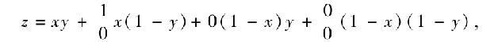
此后（命题3）将证明这允许下列解释：
“反刍牲畜包括所有干净牲畜（它们也是分蹄的），以及不分蹄的不干净牲畜的一个不确定（一些，没有，或所有）的剩余部分．”
9.以上是逻辑中的极其一般性的一个特定例子，因此它可以表述成：“给定联系着符号x，y，z，w的任何逻辑方程，对于由w表示的类与其他符号x，y，z等所表示的类的关系求一个可解释的表达式．”
这问题的解在于，从已知方程出发，用其他的符号确定上述符号w的表达式，并通过展开使那个表达式成为可解释的．既然已知方程关于所涉及的每个符号总是一次的，因此对于w而言所要求的表达式总能被找到．事实上，如果我们展开已知方程，则关于w无论其形式可能如何，我们都得到形式为
Ew+E′（1-w）=0 （1）
的一个方程，E和E′是其余符号的函数．从上面的式子我们有
E′=（E′-E）w，
于是
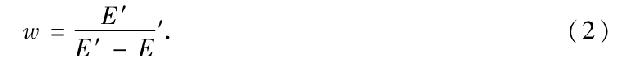
利用展开规则展开其右端，剩下的仅是利用下一个命题在逻辑中解释该结果．
如果分式
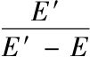
在其分子和分母中具有公因式，那么我们不允许去掉它们，除非它们仅仅是数值常数．对于符号x，y等，当作为量时允许0和1这种值以至于产生等于0的公因子，在此情形代数中的约分规则将失效．这是在我们谈到代数的除法公理不成立时（Ⅱ.14）所考虑的情形．将解表达成形式（2），而不试图进行任何未经授权的化简，使用展开定理解释这个结果，是严格地遵循本书中的一般原理的一个过程．如果要求的是表达成1-w的类与其他的类x，y等的关系，我们用同上类似的方法从（1）推出，
至于对它的解释也使用下面命题的方法：
命题Ⅲ
10.确定形式w=V的任何逻辑方程的解释，其中w是一个类符号，而V是其他类符号的一个函数并在形式上完全没有限制．
令上述方程的右端被完全展开．该结果的每个系数将属于四类中的某一个，我们依次讨论它们各自的解释．
第一，令系数为1.由于这是全域的符号，并且由于任何两个类符号的乘积表示那些在两个类中都可以找到的个体，因此任何以一为其系数的分支都必须毫无限制地加以解释，即意味着它所代表的那个类的全体．
第二，令系数为0.由于在逻辑中和在算术中一样，这是虚无的符号，因此以它为系数的分支所表示的类的任何部分都一定不被取到．
第三，令系数为
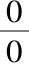
的形式．由于在算术中，除非在其他方面被某个特殊的条件所确定，符号表示一个不定的数，因此类比使我们想到在本书的系统中同样的符号将表示一个不定的类.从下面的例子我们将清楚地看出这就是它的真正含义：让我们举命题“不会死的人不存在”为例；以符号表示这个命题；并依照那些符号已经被证明所服从的规律，寻求“会死的存在物”用“人”表达的一个反向定义．
如果我们用y表示“人”，用x表示“会死的存在物”，那么命题“不会死的人不存在”将被表达为方程
y（1-x）=0，
由此我们要求x的值．从以上方程得
y-yx=0，或yx=y．
假如这是一个普通的代数方程，下一步我们就应该用y除它的两边．但是在第Ⅱ章我们已经说过，使用我们目前的符号不能进行除法运算．因此，我们的对策是表达该运算，并用前一章的方法展开这一结果．于是，我们首先有
然后，如指出的那样展开右端，
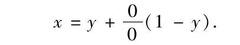
这意味着那些会死的存在物（x）包括所有的人（y），以及由系数
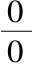
表明的是非人的存在物（1-y）的一个剩余部分．现在我们来探讨前提蕴含了“非人”的什么剩余部分．有可能出现的情况是该剩余部分包括所有是非人的存在物，或者它仅包括它们中的某些而不是另一些，或者它什么也不包括，这些假设中的任何一个都完全符合我们的前提．换句话说，无论那些是非人的存在物中的全体，某些，或者无物是会死的，该前提（它实际上断定所有人是会死的）的真实性同样将不受影响，因此这里的表达式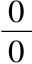
表明必须取它附加的表达式所表示的类的全体，某些，或者无物．以上关于符号之意义的确定虽然是以对一个特定情形的考察为基础建立的，然而论证中所涉及的原理是一般的，还没有出现该符号显示时同样的分析模式不能应用的情况．我们完全可以称为一个不定类符号，并且，如果需要方便的话，可以用一个服从基本规律v（1-v）=0的纯粹符号v代替它．
第四，有可能出现一个展开式中某个分支的系数不属于前面任何一个的情形．当这种情形出现时，有必要预述下面的定理：
11.定理 如果展开我们想要表示任何一个事物类或事物的汇集w的一个函数V，并且如果在其展开式中任何一个分支的数值系数a不满足规律
a（1-a）=0，
则必须要使所谈论的这个分支等于0．
为了一般地证明这个定理，我们把已知的展开式表达成下面的形式
w=a1t1+a2t2+a3t3+＆c.， （1）
其中t1，t2，t3，等表示分支，a1，a2，a3，等表示系数；我们还假设a1和a2不满足规律
a1（1-a1）=0，a2（1-a2）=0，
但其他的系数服从所谈论的规律，因此我们有
等等．现在将方程（1）的两边自乘．结果将是
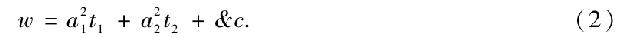
根据它必须表示方程
w=V2
的展开式的事实这是显然的，但是它也可以通过实际平方（1）来证明，并注意到根据分支的性质，我们有
等等．现在从（1）减去（2），我们有
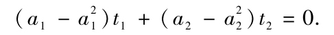
或
a1（1-a1）t1+a2（1-a2）t2=0.
用t1乘最后一个方程；则因t1t2=0，我们有
a1（1-a1）t1=0，由此t1=0.
类似地用t2乘同一方程，我们有
a2（1-a2）t2=0，由此t2=0.
因此可以一般地证明任何分支如果其系数不服从它们本身的符号所服从的相同基本规律的话必须分别等于0．产生这种系数的通常形式是．这是一个关于无穷的代数符号．于是（在允许这样一个表达式的情况下）任何数越接近无穷，它离开满足上面所指的基本规律的条件就越远．
符号
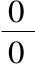
（其解释在前面讨论过）不必违背我们在此考虑的规律，因为它无差别地容许数值0和1.然而，作为一个不定类符号，我想除了根据类比外，它的实际解释不能从它的算术性质推导出，而必须通过实验来建立．12.现在我们可以把已经得到的结果集中总结如下：
第一，符号1，作为展开式中项的系数，表明要取那个分支所表示的类的全体．
第二，系数0表明没有类要取．
第三，符号
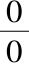
表明要取这个类的一个完全不定的部分，即其成员的某些，无物，或者全体．第四，作为系数的任何其他符号表明附加上它的那个分支必须等于0．
因此推出如果由展开式得到的一个问题的解具有形式
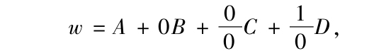
则那个解可以分解为下面两个方程，即，
w=A+vC， （3）
D=0， （4）
v是一个不定类符号．（3）的解释表明什么元是，或者可以是其定义为所求的事物类w的组成的一部分；（4）的解释表明什么关系以完全独立于w的方式存在于原初问题的元之中．
这是解释的标准．可以补充说，它们在其应用中是普遍的，并且它们的应用总是因为例外或失败而不那么令人窘迫．
13.推论 如果V是一个独立地可解释的逻辑函数，它将满足符号规律V（1-V）=0.
所谓一个独立地可解释的逻辑函数，我指的是它是可解释的，并且无需预先假设它涉及的符号所代表的事物之间的任何关系．因此x（1-y）是独立地可解释的，但x-y不是这样．作为其解释的一个条件，后一函数预先假设了y所代表的类完全包含在x所表示的类中；前一函数则没有暗含任何这样的要求．
现在如果V是独立地可解释的，并且如果w表示它包含的个体的汇集，则方程w=V将成立而无需作为在V的展开式中消去任何分支的结果；因为分支的这种消去意味着V中符号表示的事物类之间的关系．因此V的展开式将具有形式
a1t1+a2t2+＆c.
系数a1，a2等全都满足条件
a1（1-a1）t1=0，a2（1-a2）t2=0，
等等．所以借助第V章命题4的推理，函数V将服从规律V（1-V）=0.这个结果，尽管从V应该表示一个事物类或事物之汇集的事实先验地看是显然的，但它也可以看成是从组成它的分支的性质推出的．条件V（1-V）=0可以称为“逻辑函数的可解释性条件”．
14.解的一般形式，或在上一个命题中展开的逻辑结论，可以命名为一种“项之间的关系”．和以前一样，我使用词语“项”表示一个简单或复合命题的部分，它们由系词“是”联系着．由个体符号表示的事物类可以称为命题的元．
15.例1 回到“干净牲畜”的定义，（Ⅵ.6），要求关于“不干净牲畜”的一个描述．
和以前一样，这里x代表“干净牲畜”，y代表“分蹄牲畜”，z代表“反刍牲畜”，我们有
x=yz， （5）
由此
1-x=1-yz．
展开右端，
1-x=y（1-z）+z（1-y）+（1-y）（1-z）.
它能解释成以下命题：不干净牲畜是所有那些分蹄但不反刍的牲畜，所有那些反刍但不分蹄的牲畜，以及所有那些既不分蹄也不反刍的牲畜．
例2 已知同样的定义，要求关于不分蹄牲畜的一个描述．
从方程x=yz我们有
因此
展开右端，
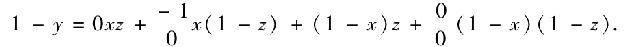
根据规则，这里的系数为
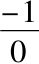
的项必须单独等于0，于是我们有1-y=（1-x）z+v（1-x）（1-z）．
x（1-z）=0.
通过解释其中第一个方程给出命题：不分蹄牲畜包括所有不干净但反刍的牲畜，以及不反刍的不干净牲畜的一个不确定的剩余部分（某些，无物，或全体）．
第二个方程给出命题：不存在不反刍的干净牲畜.这是上面提到的独立关系之一．我们要找的是“不分蹄牲畜”与“干净牲畜和反刍牲畜”之间的直接关系．然而，情况却是独立于与不分蹄牲畜的任何关系，依靠前提得知，存在着干净牲畜与反刍牲畜之间的一种单独关系．这一关系也必然由该过程给出．
例3 我们来考虑下面的定义，即：“负责任的人是要么自由行动，要么自愿牺牲其自由的有理智的人”，并对它应用前面的分析．
令 x 表示 负责任的人．
y 表示 有理智的人．
z 表示 那些自由行动的人，
w 表示 那些自愿牺牲其行动自由的人．
在这一定义的表述中，我将假定它里面出现的两个选择项，即“自由行动的有理智的人”，和“自愿牺牲其行动自由的有理智的人”，是互相排斥的，因此没有个体同时出现在这两个分划中．这将允许我们用符号语言逐字解释该命题如下：
x=yz+yw. （6）
因此我们首先来确定“有理智的人”与负责任的人，自由行动的人，和自愿放弃行动自由的人之间的关系．或许这一目标通过以下说法将得到更好的表述，即我们想要表达的是前提的各个元之间具有这样一种形式的关系，它将能够使我们确定在多大程度上理性可以从责任感，行动自由，对于自由的一种自愿牺牲和它们的对立面推出．
从（6）我们有
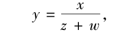
展开右端，但去掉系数为0的项，
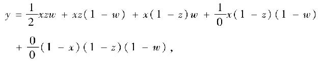
由此令系数
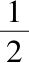
和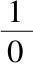
的项等于0，我们有y=xz（1-w）+xw（1-z）+v（1-x）（1-z）（1-w）； （7）
xzw=0； （8）
x（1-z）（1-w）=0. （9）
由此通过解释有
直接结论 有理智的人是所有要么自由行动但不自愿牺牲其自由，要么不自由行动但自愿牺牲其自由的负责任的人，连同不负责任，不自由，并且不自愿牺牲其自由的人的一个不确定的剩余部分（某些，无物，或全体）．
第一独立关系 没有负责任的人同时自由行动，并且处在自愿牺牲其自由的状态．
第二独立关系 没有负责任的人不自由行动，并且同时处在不自愿牺牲其自由的状态．
然而，上面确定的独立关系可以表达为另一种更方便的形式．因此（8）给出
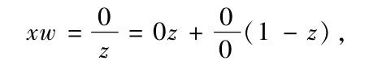
或者
xw=v（1-z）. （10）
以同样的方式（9）给出
或者
x（1-w）=vz. （11）
解释（10）和（11）给出以下命题：
第一，自愿牺牲其自由的有理智的人是不自由的．
第二，不自愿牺牲其自由的负责任的人是自由的．
然而，这些仅是前面所确定的关系的不同形式．
16.在考察这些结果时，读者必须记住，一种推理或分析方法的唯一职责，是确定词项在最初命题中的联系所必需的那些关系．因此，在估计这一目标得以实现的全部条件时，我们完全不考虑所使用的词项之含义可能暗示给我们心智的，不同于它们表达的联系的那些别的关系．于是，说“自愿牺牲其自由的人是不自由的”，这作为隐含在词项本义中的一种关系似乎是显然的．因此也许看来，由该方法确定的两个独立关系的前一个，一方面不必是受限制的，而另一方面是过剩的．然而，如果仅注意到最初的前提中词项的联系，那么我们将看到正在谈论的关系不可能受到任何一种这样的指责．正如在直接结论和独立关系中联合表达的那样，该解答是十分完整的，在任何方面都不是过剩的．
如果我们希望考虑上面所指的隐含关系，即“自愿牺牲其自由的人是不自由的”，那么我们可以通过将此写成一个不同的命题而这么做，它的正确表达式将是
w=v（1-z）．
我们必须连同表达最初前提的方程一起应用这个方程．当我们在今后的一章中着手讨论命题组的理论时将出现这样一种考察必须遵循的模式．这种分析所导致的结果的唯一差别，在于上面推出的独立关系的第一个被取代了．
17.例4 假设和例3[10]同样的定义，要求我们得到关于不理智的人的一个描述．
我们有
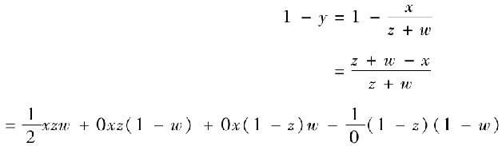
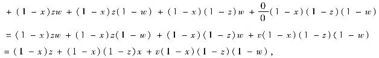
其中 xzw=0， x（1-z）（1-w）=0．
正如它们显然应该的那样，这里给出的独立关系与我们先前得到的是相同的，因为无论什么关系独立于一个给定事物类y的存在性而占主导地位，它也独立于相反的类1-y的存在性而占主导地位．
第一个方程提供的直接解答是：不理智的人包括所有要么自由行动，要么自愿牺牲其自由且不自由行动的不负责任的人；连同不牺牲其自由，且不自由行动的不负责任的人的一个不确定的剩余部分．
18.本章中所分析的命题是那种称为定义的命题．我没有讨论其中第二项或谓项是特称的命题和一般形式为Y=vX的命题，这里Y和X是逻辑符号x，y，z等的函数，v是一个不定类符号．关于这种命题的分析通过消去符号v而变得非常容易（尽管该步骤并不是必不可少的），而这一过程依赖于下一章的方法．我还将推迟讨论为完成单一命题理论所必需的另一个重要问题，但对于它的分析实际上依赖于本书不久即将展开的命题组的归约方法．
1.在上一章讨论的例子中，原始前提中的所有元都重新出现在结论中，只是次序不同，并且具有不同的联系．但是在普通推理中，尤其是当我们不止有一个前提时，更经常发生的是所需要的一些元不出现在结论中．这些元，或者如我们通常所称的“中项”，可以看成仅仅是为了帮助在其他元（只有它们被设想成为结论的表达式的一部分）之间建立联系而引入到原始命题中的．
2.关于这些中间元，或中项，流行着一些错误的观念．一般认为（然而，上一章包含的例子对此提供了反驳），推理主要在于消去这种项，而这一过程的基本类型表现在从两个前提消去一个中项，以便产生一个该项不在其中出现的单一结论．因此，通常认为，三段论是所有推理的基础，或者说，共同类型，因此一个推理无论其形式和结构有多复杂，如此都可以分解为一系列三段论．这一观点的正确性将在随后的某一章考虑．目前，我希望专注于一个重要的，但至今未被注意的问题，这就是在涉及消去法这一主题时，表达为符号的逻辑系统与普通代数系统之间的差异．在代数系统中，我们能够从两个方程消去一个符号，从三个方程消去两个符号，一般地从n个方程消去n-1个符号．因此，在给定的独立方程的个数与能够从它们消去的量的符号的个数之间，存在着确定的联系．但是就逻辑系统来说则不然．在那里表示命题或前提的给定方程的个数与能够被执行消去的典型符号的个数之间没有固定的联系．从单个方程可以消去不定数目这样的符号．另一方面，从不定数目的方程，只能消去单个的类符号．我们可以肯定，在这一特定系统中，消去问题在所有相类似的情况下都是可解的．这是逻辑符号所服从的那个不同寻常的二重律的一个推论．对于由给定前提产生的方程，存在着从基本思维规律本身推导出的额外附加方程或方程组，并为所论问题的求解提供了必要手段．在从二重律产生的许多推论中，这可能是最值得注意的．
3.正如在代数中，常常会发生从一个给定方程组仅仅导出形式为0=0的恒等式的情况，此时没有联系余下符号的独立关系；同样的结果可能出现在逻辑系统中，并允许类似的解释．这种情况不会降低前述原理的一般性．我们打算开始谈论的方法之目标是要从任意个数的逻辑方程消去任意个数的符号，并在结果中要显示剩下的实际关系．现如今有可能不存在这样的剩余关系．在这种情况下该方法的真实性表现为它仅仅将我们引导到一个恒等的命题．
4.下列命题中采纳的记号与上一章中所用的记号类似．f（x）是指包含逻辑符号x，具有或没有其他逻辑符号的表达式．f（1）是指在其中当x变成1时所成的结果；f（0）是指当x变成0时所成的结果．
命题Ⅰ
5.如果f（x）=0是包含类符号x的逻辑方程，并且具有或不具有其他的类符号，则方程
f（1）f（0）=0
将独立于x的解释而成立；它将是从上面的方程消去x的完整结果．
换句话说，从任何给定方程f（x）=0消去x，将通过在该方程中相继把x变成1和把x变成0，并把两个结果方程乘在一起来实现．
类似地，从形式为V=0的任何方程消去任何类符号x，y等的完整结果，将通过以给定符号的分支完全展开该方程，并把这些分支的所有系数乘起来，使乘积等于0得到．
展开方程f（x）=0的左边，我们有（Ⅴ.10），
f（1）x+f（0）（1-x）=0，
或 {f（1）-f（0）}x+f（0）=0. （1）
并且
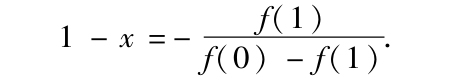
用这些表达式替换基本方程
x（1-x）=0
中的x和1-x，由此导致
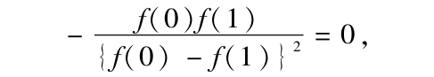
或
f（1）f（0）=0 （2）
即所要求的形式．
6.我们在这一过程中看到，消去实际上是在给定方程f（x）=0与普遍成立的方程x（1-x）=0之间进行的，后者表达的是逻辑符号本身的基本规律．因此，为了使得有可能消去某个项，不需要有一个以上的前提或方程，这个必然的思维规律实际上提供了另一个前提或方程．尽管这一结论的证明可以用其他形式展示，然而我们仍将实际呈现由心智本身提供的同样的元．因此我们可以照如下进行：
用x乘（1），我们有
f（1）x=0， （3）
接着我们来寻求利用普通代数的形式从这个方程和（1）消去x．
现在如果我们有两个代数方程，形式为
ax+b=0，
a′x+b′=0，
那么众所周知消去x的结果是
ab′-a′b=0. （4）
但是将上面一对方程分别与（1）和（3）比较，我们发现
a=f（1）-f（0）， b=f（0）；
a′=f（1）， b′=0．
替换（4），得
f（1）f（0）=0，
如前．在这种形式的证明中，基本方程x（1-x）=0出现在从（1）导出（3）的过程中．
7.我还将补充上另一种形式的证明，由于具有一种半逻辑的特征，因此它可以更清晰地阐释这一重要定理的证明．
和从前一样我们有
f（1）x+f（0）（1-x）=0.
先将这一方程与x相乘，其次与1-x相乘，我们得
f（1）x=0，f（0）（1-x）=0.
从这两个方程通过解并展开我们有
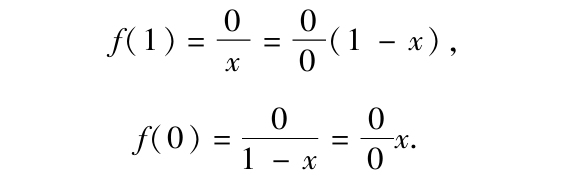
这两个方程的直接解释是：
第一，由f（1）表示的类中所包含的无论什么个体都不是x．
第二，由f（0）表示的类中所包含的无论什么个体都是x．
由此据普通逻辑，没有个体同时既在f（1）中又在f（0）中，即在类f（1）f（0）中不存在个体．因此
f（1）f（0）=0. （5）
或者将展开的方程乘起来就够了，由此将立即推出这一结果．
8.定理（5）为我们提供了以下规则：
从一个选定的方程消去任何符号
规则 该方程的项已经（如有必要通过移项）移至方程左边，相继给该符号赋值1和0，然后将结果方程乘在一起．
现在该命题的第一部分得证．
9.接下来考虑一般方程
f（x，y）=0，
其左边表示关于x，y，和其他符号的任何函数．
根据已经证明了的，从这个方程消去y的结果将是
f（x，1）f（x，0）=0，
因为这是我们相继将给定方程中的y变成1，再将y变成0，然后将结果乘在一起得到的形式．
此外，如果我们相继在所得结果中将x变成1，再将x变成0，然后将结果乘起来，我们有
f（1，1）f（1，0）f（0，1）f（0，0）=0 （6）
作为最终的消去结果．
但是这个方程左边的四个因子，是原方程左边f（x，y）的完全展开式的四个系数；由此该命题的第二部分是显然的．
例子
10.例1 给定命题“所有人都会死”，及其用方程表示的符号表达式
y=vx，
其中y表示“人”，x表示“会死的生物”，要求消去不定类符号v，并解释这一结果．
使各项置于方程左边，我们有
y-vx=0．
当v=1，这成为
y-x=0，
当v=0，它成为
y=0．
将这两个方程乘起来，注意到y2=y，得
y-yx=0，
或者
y（1-x）=0．
以上方程就是所要求的消去结果，它的解释是，不会死的人不存在，——一个明显的结论．
如果从上面得到的方程我们寻求关于不会死的生物的一种描述，我们有
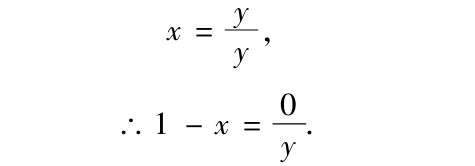
由此，经展开，1-x=
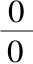
（1-y），它经解释得，不会死的生物不是人.这是在普通逻辑中称为换质位，或否定换位[11]的一个例子．例2 考虑命题“没有人是完美的”，表示为方程
y=v（1-x），
其中y表示“人”，x表示“完美的生物”，要求消去v，并从该结果找出完美的生物和不完美的生物两者的描述．我们有
y-v（1-x）=0．
由此，根据消去规则，
{y-（1-x）}×y=0，
或者 y-y（1-x）=0，
或者 yx=0．
据此命题其解释为，完美的人不存在.从上面的方程我们有
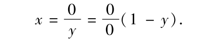
由此，通过解释得，任何完美的生物都不是人.类似地，
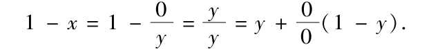
经解释后，得，不完美的生物是所有人，以及不是人的生物的一个不定部分．
11.在处理命题时，通常最方便的途径是首先消去不定类符号v，无论它出现在相应方程的何处．这只会修改它们的形式，而不会损害它们的意义．让我们把这个过程应用于第Ⅳ章的一个例子．对于命题，“没有人处于高位，又免遭妒忌”，我们有表达式
y=v（1-xz），
而对于等价的命题，“处于高位的人是无法免遭妒忌的”，表达式为
yx=v（1-z）．
我们注意到，这些方程本身是等价的，这里v是一个不定类符号．为了证明这件事，只需从每个方程消去符号v.第一个方程是
y-v（1-xz）=0，
由此，先使v=1，再使v=0，然后将结果相乘，我们有
（y-1+xz）y=0，
或 yxz=0．
第二个给定方程移项后得
yx-v（1-z）=0，
由此 （yx-1+z）yx=0，
或 yxz=0，
同前．读者将很容易解释这个结果．
12.例3 作为本章的一般方法的一个对象，我们将重拾西尼尔先生关于财富的定义，即：“财富由可转让的，限供的事物构成，并且要么产生快乐要么防止痛苦．”和从前的说法一致，我们将认为这一定义包括同时具有该定义后一部分表达的两种属性的所有事物，基于这一假设我们有
w=st{pr+p（1-r）+r（1-p）}，
作为我们的表示方程，或者，
w=stp+r（1-p），
其中
从上面的方程我们可以消去我们不想考虑的任何符号，并按照主词和谓词的任何设想安排，用解和展开表达这个结果．
让我们首先考虑，如果消去指称防止痛苦的元r，那么w，即财富的表达式将会是什么．现在将方程的项置于左边，我们得
w-st（p+r-rp）=0.
使r=1，左边成为w-st，使r=0，它成为w-stp；由此根据规则我们有
（w-st）（w-stp）=0， （7）
或
w-wstp-wst+stp=0. （8）
由此
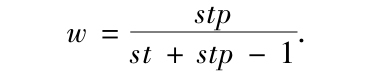
展开这一方程的右边得
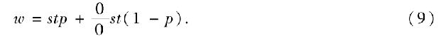
由此我们有结论：财富包括所有限供的，可转让的，并产生快乐的事物，连同限供的，可转让的，但不产生快乐的事物的一个不定的剩余部分．这是十分清楚的．
这里要说的是，为了确定w表示成其他符号的表达式，不必进行（7）所显示的乘法，而把该方程归约为形式（8）．在所有情形中，展开过程可以用来替代乘法过程．因此如果我们按w展开（7），我们得
（1-st）（1-stp）w+stp（1-w）=0.
由此
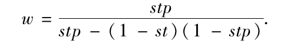
和以前一样，展开这个方程将得到
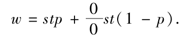
13.接下来假设我们要寻求限供事物随它们与财富，可转让性，和产生快乐取向的关系而定的描述，同时略去所有与防止痛苦的关联．
从方程（8）——它是从原来方程消去r的结果——我们有
w-s（wt+wtp-tp）=0.
由此
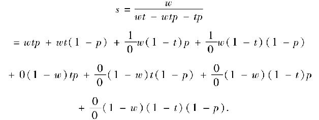
我们首先逐项对上面的解给出直接解释；然后，我们将给出它所暗示的一些一般评论；最后，说明关于结论的表达式如何可以被稍许简化．
于是，首先直接解释是，限供事物包括所有可转让的且产生快乐的财富——所有可转让的但不产生快乐的财富，——一个不定量的非财富，而它要么可转让但不产生快乐，要么不可转让但产生快乐，要么既不可转让也不产生快乐．
对于系数为
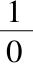
的项，允许我们补充下列独立关系，即：第一，不可转让的且产生快乐的财富不存在．
第二，不可转让的且不产生快乐的财富不存在．
14.关于这个解，我以为有可能作出以下评论．
首先，可以说，在上面得到的“限供事物”的表达式中，词项“所有可转让的财富”等，在某种程度上是多余的；因为所有财富（正如在原来命题中所隐含的，和在独立关系中所直接断言的）都必须是可转让的．
我的回答是，虽然在日常语言中我们应该认为，如果我们推理的另外部分已经将我们引导到表达结论：不存在不可转让的财富，就没有必要将形容词“可转让的”加到“财富”上，然而它与该方法的完美有关，通过表明由结论的每一项表示的对象与我们已经决定使用的每个不同性质或不同元之间的关系，它在所有情形中完全定义了它们．为了使解的不同部分真正不同并独立，这是必要的，而且实际上防止了不必要的重复．假设我们一直在考虑的这对词项已经不包含“可转让的”这个词，而是统一为“所有财富”，于是我们能够在逻辑上将单个词项“所有财富”分解为两个词项“所有可转让的财富”和“所有不可转让的财富”．但是“独立关系”表明后一词项不出现．因此它不构成所要求的描述的任何部分，从而是多余的．实际得到的是与结论一致的剩余词项．
其中不能通过逻辑划分产生任何过剩的或多余的项的解可以称为纯粹解.这就是通过上面解释的展开和消去方法得到的全部解．值得注意的是，如果在可以允许目前系统中的方法的情形中采取普通代数的消去法，我们将不能够依靠所得解的纯粹性．而缺乏一般性并不是它的唯一缺陷．
15.其次，我们说，这个结论包含两个词项，它们总的意义用一个单个词项表达将更方便．代替“所有产生快乐，且可转让的财富”和“所有不产生快乐，且可转让的财富”，我们可以简单地说，“所有可转让的财富”．这一说法相当正确．但是我们必须注意到每当任何这种简化成为可能时，它们立即为我们得要解释的形式所暗示；如果那个方程被归约为其最简单的形式，则对它的解释也将具有最简单的形式．因此在原来的解中，项wtp和wt（1-p）具有系数1，相加后得wt；项w（1-t）p和w（1-t）（1-p），它们的系数为
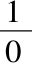
，给出w（1-t）；项（1-w）（1-t）p和（1-w）（1-t）（1-p），它们的系数为，给出（1-w）（1-t）．由此完全解是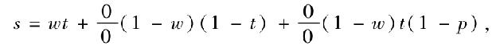
以及独立关系
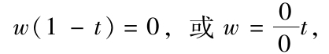
目前的解释将是：
第一，限供事物包括所有可转让的财富，连同非财富且不可转让，以及非财富且不产生快乐的可转让事物的一个不定剩余部分．
第二，所有财富都是可转让的．
这是该一般结论及其伴随条件所能表达的最简单形式．
16.当要求我们从一个所考虑的方程消去两个或更多个符号时，我们可以要么应用命题Ⅰ（6），要么逐次消去它们，这一过程的次序则无关紧要．从方程
w=st（p+r-pr）.
我们消去r，并得到结果
w-wst-wstp+stp=0.
假设要求我们既消去r也消去t，则将上面的过程当作第一步，剩下的就是从最后一个方程消去t.当t=1时该方程的左边成为
w-ws-wsp+sp，
当t=0时这同一边成为w.由此我们有
w（w-ws-wsp+sp）=0，
或 w-ws=0，
即所要求的消去结果．
如果从最后一个方程我们确定w，我们有
由此“所有财富都是限供的”．由于p不是该方程的一部分，因此上面的方程显然成立，而不管该结论中的元与“产生快乐”这一属性之间存在何种关系．
重新考虑原来的方程，要求我们消去s和t.我们有
w=st（p+r-pr）.
然而，我们不是按照规则分别消去s和t，而是完全将st看作一个单个符号，因为它满足方程
st（1-st）=0
表达的符号的基本规律．因此，将给定方程写成形式
w-st（p+r-pr）=0，
并使st相继等于1和0，将结果相乘，我们有
（w-p-r+pr）w=0，
或 w-wp-wr+wpr=0，
即为所求结果．
作为一个特殊例证，让我们对于“产生快乐的事物”（p），推出一个用“财富”（w）和“防止痛苦的事物”（r）表示的表达式．
解这个方程后，我们有
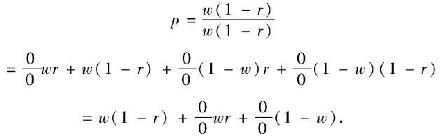
由此有下面的结论：——产生快乐的事物是，所有不防止痛苦的财富，防止痛苦的财富的一个不定量，和非财富的事物的一个不定量．
从同一方程我们得
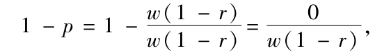
将其展开，得
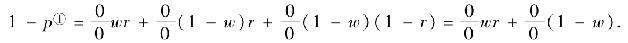
由此，不产生快乐的事物要么是防止痛苦的财富，要么不是财富．
任何类似的情形同样容易讨论．
17.在上一个消去例子中，我们已经通过将复合符号st当成一个单个符号，从给定方程消去了它．同样的方法可以应用于满足单个符号的基本规律的任何符号组合．因此表达式p+r-pr在与自身相乘后将复制自身，因此如果我们将p+r-pr表示成一个单独符号y，我们将有，因满足方程
y=y2，或y（1-y）=0，
从而服从基本规律．因为符号的消去规则建立在每个单个符号服从那个规律的基础之上；因此从一个方程消去这种符号的任何函数或组合，当函数满足那个规律时，可以通过单独运算来进行．
虽然本章和前一章采取的解释形式显示出符号1和的也许比其他解释更好的直接含义，但是可以应用同样真实也同样合适并与日常话语更一致的表达方式．因此方程（9）可以用下列方式解释：财富要么是限供的，可转让的并产生快乐的，要么是限供的，可转让的但不产生快乐的．反之，限供的，可转让的并产生快乐的无论什么都是财富．当最终的展开式引进了具有系数1的项时，总能提供与上面类似的反向解释．
18.注记 基本方程f（1）f（0）=0表达的是从任何方程f（x）=0消去符号x的结果，它允许一种不同寻常的解释．
应该记住，所谓方程f（x）=0是指某个命题其中涉及到类x（假定“人”）表示的个体，也许，连同其他的个体；我们的目的是要确定，独立于人这个类中出现的那些关系，在此命题中是否隐含着存在于其他个体间的任何关系．现在方程f（1）=0表达的是如果人构成全域那么原来的命题将为何，而方程f（0）=0表达的是如果人不存在那么原来的命题将为何，因此方程f（1）f（0）=0表达的是在两个假设之一下凭借原来的命题都为真的事物，即，无论“人”是“全部事物”还是“虚无”它都为真．因此该定理表达的是无论一个给定的事物类包括整个全域还是不存在，都为真的事物完全独立于那个类，反之亦然．在此我们看到了关于形式结果之解释的另一个例子，它直接从思维的数学规律推出，而成为一般的哲学原理．
1.出于最基本的目的，我们在前一章已经充分确定了单个初级命题的理论，或者更确切地说，由单个方程表达的初级命题的理论．而且我们已经在这一理论的基础上建立了一种适当的方法．我们已经指出怎样可以消去包含在给定方程组中的任何元，并以任何设想的形式推导出连接着剩余元的关系，无论它是否定的，还是肯定的，或者是更通常的主词和谓词的关系．剩下我们要做的是考虑命题组，并对它们进行一系列类似地研究．我们要探讨是否有可能从表达命题组的方程，随意地消去所包含的任意个数的符号；根据对结果的解释推导出隐含在剩余符号中的全部关系；尤其是要确定任何单个元，或者任何可解释的元的组合关于其他元的表达式，以便以任何可接受的形式呈现可能需要的结论．通过表明有可能将任何方程组，或一个方程组中包含的任何方程归约为一个等价的单个方程——对于它可以立即应用前一章的方法，这些问题将得到回答．我们还将看到，在这一归约过程中涉及对于单个命题理论的一种重要推广，而此前我们不得不先对这一主题进行讨论．这一情况就其本质来说并不特别．有许多特殊的科学部门无法从内部进行全面的考察，而还需要从某种外部的视角进行研究，并且要在与其他的邻近学科的联系中去看待，以便它们的全部命题能够被理解．
本章将给出将方程组归约为等价的单个方程的两种不同方法．第一种方法依赖于任意常数乘子的应用．这一方法在理论上足够简单，但是它使得接下来的消去过程和展开过程不够方便，有些冗长乏味．然而，它是第一个被发现的归约方法，而且部分地由于这个原因，部分地由于它的简单性，我们认为保留它是合适的．第二种方法不需要引入任意常数，并且几乎在所有方面都比前一方法更好．因此，在本书随后的研究中通常采取这一方法．
2.我们先来考虑第一种方法．
命题Ⅰ
任何逻辑方程组，通过将第一个方程以后的每个方程乘上一个不同的任意常量，并将包括第一个方程在内的所有结果加在一起，可以归约为一个等价的单个方程．
根据第Ⅵ章命题2，任何单个方程f（x，y，…）=0的解释是通过将左边展开后使那些系数不为0的分支等于0得到的．因此，如果给定两个方程f（x，y，…）=0和F（x，y，…）=0，那么它们的联合含义将包含在所有使这样的分支——它们出现在给定方程的两者或两者之一按照第Ⅵ章的规则得到的展开式中——等于0形成的结果组中．因此假设我们有两个方程
xy-2x=0， （1）
x-y=0. （2）
展开第一个方程得
-xy-2x（1-y）=0.
从而
xy=0，x（1-y）=0. （3）
展开第二个方程得
x（1-y）-y（1-x）=0.
从而
x（1-y）=0，y（1-x）=0. （4）
两个展开式中系数不为0的分支是xy，x（1-y），和（1-x）y，这些将一起引出方程组
xy=0，x（1-y）=0，（1-x）y=0. （5）
这等价于由展开式分别给出的两组方程，因为在这两组中方程x（1-y）=0是重复的．假设我们将讨论限于二元方程组，那么剩下的事情就是要确定某个单个方程，它在展开后将得到与两个给定方程产生的系数不为0的分支同样的分支．
于是如果我们用
V1=0，V2=0，
表示给定的方程，V1和V2是逻辑符号x，y，z等的函数；则单个方程
V1+cV2=0， （6）
将实现所需的目标，这里c是一个任意常量．因为令At表示在V1的完全展开中的任一项，其中t是一个分支而A是它的数值系数，再令Bt表示在V2的完全展开中的任一项，则在（6）的展开式中的相应项将是
（A+cB）t.
如果A和B都为0则t的系数为0，但其他情况则不然．因为如果我们假定A和B不都为0，同时使
A+cB=0， （7）
那么可能出现下列情形之一．
第一，A等于0而B不等于0.在这一情形上面的方程成为
cB=0，
从而要求c=0.但是这与假设c是一个任意常量相矛盾．
第二，B等于0而A不等于0.这个假设将（7）归约为
A=0，
由此与假设本身相违背．
第三，A和B都不为0.于是方程（7）给出
这是一个确定值，因此，与c是任意的这一假设相矛盾．
因此当A和B都为0时系数A+cB等于0，但其他情况则不然．因此，与在方程V1=0，V2=0单独一个或二者一起的情形中相同的系数不为0的分支，将出现在（6）的展开式中．方程V1+cV2=0将等价于方程组V1=0，V2=0．
根据类似的推理，看来一般的方程组
V1=0，V2=0，V3=0，等等，
可以由单个方程
V1+cV2+c′V3+…=0
替代，c，c′等是任意常量．因此这样形成的方程可以在所有方面像前一章的普通逻辑方程那样来对待．任意常量c1，c2等不是逻辑符号．它们不满足规律
c1（1-c1）=0，c2（1-c2）=0.
但是它们的引入受到了在（Ⅱ.15）和（Ⅴ.6）中已经得到表述，并在几乎所有我们后来的研究中得到例证的那个一般原则的保证，即对于包含逻辑符号的方程在所有方面都可以这样来处理，就好像那些符号是服从特殊规律x（1-x）=0的量的符号一样，直到解的最后阶段它们呈现出一种在与逻辑有关的思维系统中可解释的形式．
3.下面的例子将用来说明以上方法．
例1 假设对于特定的一类物质的分析导致下列一般结论，即：
第一，无论性质A和性质B在哪里结合，要么性质C，要么性质D也呈现；但是它们不共同呈现．
第二，无论性质B和性质C在哪里结合，性质A和性质D要么都和它们一起呈现，要么都不呈现．
第三，无论性质A和性质B在哪里都不呈现，性质C和性质D也都不呈现；反之，性质C和性质D都不呈现的地方，性质A和性质B也都不呈现．
接着我们要求根据上述来确定，在任何特定例子中从性质A的呈现关于性质B和C的呈现或不呈现，而不考虑性质D，可以推论出什么．
x 表示 性质A；
y 表示 性质B；
z 表示 性质C；
w 表示 性质D．
因此前提的符号表达式将是
xy=v{w（1-z）+z（1-w）}；
yz=v{xw+（1-x）（1-w）}；
（1-x）（1-y）=（1-z）（1-w）.
从这些方程中的前两个，分别消去不定类符号v，我们有
xy{1-w（1-z）-z（1-w）}=0；
yz{1-xw-（1-x）（1-w）}=0.
现在如果我们注意到经过展开
1-w（1-z）-z（1-w）=wz+（1-w）（1-z）
和
1-xw-（1-x）（1-w）=x（1-w）+w（1-x），
并且为简单起见在这些表达式中，
用代替1-x，用代替1-y，等等，
那么由最后三个方程我们将有
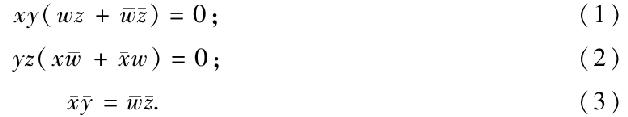
从这组方程我们必须消去w．
用c乘上面第二个方程，c′乘第三个方程，并将结果与第一个方程相加，我们有
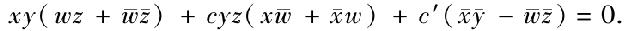
如果使w等于1，则有等于0，上面方程的左边成为
而如果在同一边使w为0，=1，它成为
因此消去w的结果可以表达为形式
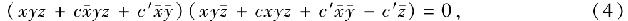
由此方程x得以确定．
假如我们现在像在前面例子中那样去做，我们应该将以上方程左边的因子相乘；但是可以表明这一过程完全是不必要的．我们来对x，也就是我们要找它的表达式的那个符号，展开（4）的左边，我们得
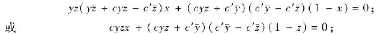
由此我们有
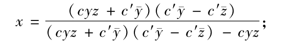
关于y和z展开右边，
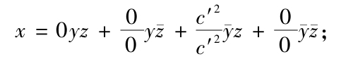
或
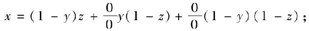
或
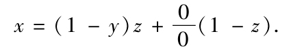
关于它的解释是，无论性质A在哪里呈现，都有要么性质C呈现且性质B不呈现，要么性质C不呈现．反之，无论在哪里性质C呈现，且性质B不呈现，都有性质A呈现．
这些结果可以由接下来将要解释的方法更加容易地得到．然而，拥有达至同一结论的不同方法用来相互验证也是令人满意的．
4.我们来看第二种方法．
命题Ⅱ
如果任何方程，V1=0，V2=0，等等，使得它们左边的展开式只包含具有正系数的分支，则那些方程可以通过加法结合成一个等价的单个方程．
因为，和以前一样，令At表示函数V1的展开式中的任一项，Bt是V2的展开式中的相应项，等等．于是通过将几个给定方程相加形成的方程
V1+V2+…=0 （1）
的相应项是
（A+B+…）t.
但是根据假设系数A，B，等等都是非负的，从而导出方程中的结合系数A+B，等等只有当分开的系数A，B，等等一起为0时才为0.因此和在共同考虑的原来方程组的几个方程V1=0，V2=0，等等中相同的分支将出现在（1）的展开式中，从而关于方程（1）的解释将等价于它由之导出的那几个方程的共同解释．
命题Ⅲ
5.如果V1=0，V2=0，等等表示任一组方程，其项已经通过移项被置于方程的左边，则此组方程的联合解释将包含于由给定方程的平方加在一起形成的单个方程
因为令组中任一方程，比如V1=0，展开后产生一个方程
a1t1+a2t2+…=0，
其中t1，t2等是分支，而a1，a2等是其相应的系数．于是方程V12=0展开后将产生一个方程
这可以由展开定律证明，或者通过在服从第V章命题3确定的条件
下将函数a1t1+a2t2，等等平方来证明．因此出现在方程
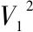
的展开式中的分支与出现在方程V1=0的展开式中的分支相同，但它们具有正的系数．同样的说明也适用于方程V2=0等．由此根据上一个命题，方程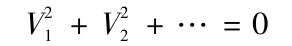
在解释上将等价于方程组
V1=0，V2=0，等等．
推论．其中左边已经满足条件
V2=V，或V（1-V）=0
的任何方程V=0，不需要平方过程（因为它不受此过程的影响）．事实上，这样的方程即刻可以展成一系列系数等于1的分支，第V章命题4．
命题Ⅳ
6.每当一组方程经由上面的平方过程，或通过任何其他过程已经归约为某个形式，使得在其展开式中显示的所有分支具有正的系数，则通过消去得到的任何导出方程将具有同样的特征，并且可以通过加法与其他方程相结合．
假设任何方程V=0在其左边的完全展开式中没有分支具有负的系数，我们必须要从它消去一个符号x.那个展开式可以写成形式
V1x+V2（1-x）=0，
V1和V2[12]每一个具有形式
a1t1+a2t2+…+antn，
其中t1t2…tn是其他符号构成的分支，a1a2…an在每种情形是正的量或0.消去的结果是
V1V2=0，
并且因为V1和V2的系数中没有一个是负的，所以乘积V1V2中不会有负的系数．因此方程V1V2=0可以加上任何其他的其分支系数是正的方程，而结果方程将结合它由之得到的那些方程的全部意义．
命题Ⅴ
7.从先前的命题推导出一种实用的规则或方法以归约表达逻辑命题的方程组．
通过前面的研究我们已经建立了以下要点，即：
第一，任何具有形式V=0的方程，其中V满足基本的二重律V（1-V）=0，都可以通过简单的加法结合起来．
第二，任何具有形式V=0的其他方程可以通过平方过程归约为某种形式，其中可以应用相同的单纯相加这一结合原理．
于是剩下的仅仅是要确定，在实际的命题表达式中，哪些方程属于前一类，哪些属于后一类．
在第Ⅳ章的末尾已经陈列出命题的一般类型．它们所表示的命题的划分如下：
第一，主词是全称，而谓词是特称的命题．
这类命题的符号形式（Ⅳ.15）是
X=vY，
X和Y满足二重律．消去v，我们有
X（1-Y）=0， （1）
我们也将发现它满足相同的规律．不需要通过平方过程进一步归约．
第二，两个词项都是全称的命题，这类命题的符号形式是
X=Y，
X和Y分别满足二重律．将该方程写成形式X-Y=0，平方，我们有
X-2XY+Y=0，
或者
X（1-Y）+Y（1-X）=0. （2）
这一方程的左边满足二重律，因为从它本身的形式看是显然的．
我们可以使用不同的方式得到同样的方程．方程
X=Y
等价于两个方程
X=vY，Y=vX，
（因为要断定X和Y相同就是既断定所有X是Y，又断定所有Y是X）．现在消去v，从这些方程得出
X（1-Y）=0，Y（1-X）=0，
将它们相加，就得到（2）．
第三，两个词项都是特称的命题．这种命题的形式是
vX=vY，
但是v不完全是任意的，因此一定不要消去．因为v代表的是有些，尽管在其含义中可以包括所有，但它不包括没有.因此我们必须将右边移项至左边，并按照规则平方结果方程．
该结果显然是
vX（1-Y）+vY（1-X）=0.
将以上结论具体化为一个规则可能是便利的，它将经常用作未来的指导．
8.规则 假设在以下列典型形式表达的方程中词项X和Y服从二重律，将方程
X=vY 转换成 X（1-Y）=0，
X=Y 转换成 X（1-Y）+Y（1-X）=0．
vX=vY 转换成 vX（1-Y）+vY（1-X）=0．
任何以形式X=0给出的方程无需转换，而任何以形式X=1呈现其自身的方程可以替换为1-X=0，如上面转换中的第二个所显示的．
当这组中的方程已经被如此归约，它们中的任何一个，以及通过消去过程从它们导出的任何方程可以通过加法结合起来．
9.注记 我们已经在第Ⅳ章看到，在照字面将一个方程的词项翻译成符号语言，而不关心它的真实含义时，我们可能会得到其中词项X和Y不服从二重律的方程．在该章命题3（3）中涉及的方程w=st（p+r）就属于此类．然而，如我们已经看到的，这样的方程具有某种含义．如果为了好奇，或任何其他动机决定使用它们，那么最好是利用规则（Ⅳ.5）将它们归约．
10.例2 我们来考虑以下初等几何命题：
第一，相似形包括所有对应角相等，对应边成比例的图形．
第二，对应角相等的三角形其对应边成比例，反之亦然．
为了表示这些前提，我们设
s=相似．
t=三角形．
q=具有相等的对应角．
r=具有成比例的对应边．
则这些前提由下列方程表达：
s=qr， （1）
tq=tr. （2）
根据规则归约，或者相当于做同样的事情，将这些方程的项置于左边，平方每个方程，然后相加，我们有
s+qr-2prs+tq+tr-2tqr=0. （3）
我们需要推出由词项，三角形，具有相等的对应角，具有相等的对应边表达的元形成的关于不相似图形的一个描述．
由（3）我们有，
完全展开右边，我们得
1-s=0tqr+2tq（1-r）+2tr（1-q）+t（1-q）（1-r）
+0（1-t）qr+（1-t）q（1-r）+（1-t）r（1-q）
+（1-t）（1-q）（1-r）. （5）
在上面的展开式中有两项的系数是2，根据规则这些项必须等于0，然后丢弃那些系数为0的项，我们有
1-s=（1-q）（1-r）+（1-t）q（1-r）+（1-t）r（1-q）
+（1-t）（1-q）（1-r）；（6）
tq（1-r）=0； （7）
tr（1-q）=0. （8）
其直接解释是
第一，不相似图形包括所有对应角不相等且对应边不成比例的三角形，和所有那些要么具有相等的角及不成比例的边，要么具有成比例的对应边及不等的角，要么其对应角不等而对应边也不成比例的不是三角形的图形．
第二，不存在其对应角相等，但对应边不成比例的三角形．
第三，不存在其对应边成比例，但对应角不相等的三角形．
11.这就是最终方程的直接解释．与一般理论相一致，我们看到在推导特定的事物类，即不相似图形关于原来前提中某些其他元之表示的一种描述时，我们也得到了存在于那些依赖同一前提的元之间的独立关系．容易证明，甚至就探究的直接对象来说，这都不是多余的信息．例如，如果想要的话，总可以利用独立关系将直接寻求的那种关系的表达式归约为更简洁的形式．因此，如果我们将（7）写成形式
0=tq（1-r），
并将它加到（6），由于
t（1-q）（1-r）+tq（1-r）=t（1-r），
我们得
1-s=t（1-r）+（1-t）q（1-r）+（1-t）r（1-q）+（1-t）（1-q）（1-r），
经解释后，它将给出关于不相似图形的描述的第一项为，“对应边不成比例的三角形”，以代替原来得到的完全描述．对于便利性的某种考虑总是不可避免地决定了这种归约的恰当性．
12.总是便利的一种归约（Ⅶ.15）在于将所寻求的直接描述之项，如（5）和（6）的右边，聚集成尽可能少的组．这样（6）的右边的第三和第四项相加产生一个单独的项（1-t）（1-q）．如果这一归约与上面一个相结合，我们有
1-s=t（1-r）+（1-t）q（1-r）+（1-t）（1-q），
其解释是
不相似图形包括所有对应边不成比例的三角形，和所有那些要么具有不相等的对应角，要么具有相等的对应角，但对应边不成比例的不是三角形的图形．
因此一般解的完全性不是一种多余．在它给出我们所寻求的所有信息的同时，它也提供给我们以最便利的方式表达那种信息的方法．
13.还需作出另外的评论，以说明已经表述过的一个原理．在（5）中1-s的完全展开式的项中有两个的系数是2，而不是．以后我们将证明这种情况显示这两个前提不是独立的．为了验证这一点，我们继续考虑前提的方程归约后的形式，即，
s（1-qr）+qr（1-s）=0，
tq（1-r）+tr（1-q）=0.
现在如果这些方程的左边有任何共同的分支，那么在把这些方程乘起来后它们将出现．如果我们这么做我们得
stq（1-r）+str（1-q）=0.
由此将导致
stq（1-r）=0，str（1-q）=0，
这些方程能够从原来方程中的任何一个推出．它们的解释是：
对应角相等的相似三角形它们的对应边成比例．
对应边成比例的相似三角形它们的对应角相等．
这些结论从任何一个前提同样能够单独推导出来．在这方面，根据所下的定义，前提不是独立的．
14.最后，让我们重新考虑在说明本章的第一种方法时讨论过的问题，并根据目前的方法尽力弄清楚，从性质C的呈现，关于性质A和性质B可以推出什么结论．
消去符号v后我们得到下面的方程，即
从这些方程我们要消去w并确定z.现在（1）和（2）已经满足条件V（1-V）=0.第三个方程当把项置于左边，并平方后得
将（1）（2）和（4）相加，我们有
消去w，我们得
现在，用第一个因子中的各项相继乘第二个因子中各项，注意到
几乎全部消失，我们只剩下
由此
提供了解释．无论性质C在哪里出现，要么性质A要么性质B也将在那儿出现，但不是两者一起出现．
从方程（5）我们可以立即推出在前面的研究中利用任意常数乘子的方法得到的结果，以及x，y和z之间关系的任何其他设想形式；例如，如果性质B不呈现，则要么A和C将共同呈现，要么C将不呈现.反之，如果A和C共同呈现，则B将不呈现．这一结论的反向部分的根据是在的展开式中，项xz的系数为1．
1.虽然在前几章建立和阐明的展开，消去和归约三种基本方法，对于逻辑的所有实用目的而言是足够了，然而它们在某些情形中，尤其是消去方法，在很大程度上有可能被简化；对此我希望在本章中予以直接考虑．我将首先说明其中包含上述简略方法原理的一些命题，然后我将把它们应用于特定的例子．
让我们将满足基本规律V（1-V）=0的任何项称为类项．这些项将单独成为分支；但是，当一起出现时，正如一个展开式中的项一样，它们中的每一个将不必包含相同的符号．因此ax+bxy+cyz可以被描述成由三个类项，x，xy，和yz，分别乘以系数a，b，c组成的一个表达式．在下面两个命题中应用的原理——在一些例子中，它极大地省略了消去过程——是舍弃多余的类项.那些被认为多余的类项将不加到最终结果的分支上．
命题Ⅰ
2.从任何方程，V=0，其中V包括具有一系列正系数的类项，我们可以舍弃任何包含另一个项作为因子的项，并将每个正系数变成1．
因为这一系列正项的含义仅依赖于它的最终展开式，即它关于其涉及的所有符号之展开式的分支的个数和性质，而完全不依赖于该系数实际的值（Ⅵ.5）．现令x是这系列的任何项，xy是有x作为一个因子的任何其他项．x关于符号x和y的展开式将是
xy+x（1-y）.
x与xy之和的展开式将是
2xy+x（1-y）.
但是根据我们已经说过的，出现在一个方程（其右边为0，并且其左边的所有系数都是正的）左边的这些表达式是等价的；因为在最终展开式中一定确实存在两个分支xy和x（1-y），由此将完全产生结果方程
xy=0，x（1-y）=0.
因此，项的聚合x+xy可以由单个项x代替．
同样的推理适用于该命题囊括的所有情形．因此，如果重复项x，则聚合2x可以由x代替，因为在此情况下方程x=0一定出现在最终的归约式中．
命题Ⅱ
3.每当在消去过程中我们必须要把两个因子乘起来，而每个因子只包括正项，并满足逻辑符号的基本规律时，则允许我们从这两个因子舍弃任何共有的项，或者从两个因子中的任何一个舍弃被另一因子中的一个项可除的任何项；假设总是将被舍弃的项加到结果因子的乘积上．
在此命题的阐述中，“可除的”一词是一个在代数意义上使用的方便术语，其中xy和x（1-y）称为是被x可除的．
为了使这个命题的含义更清楚，我们假设要乘在一起的因子是x+y+z和x+yw+t.于是断定，从这两个因子我们可以舍弃项x，而从第二个因子我们可以舍弃项yw，假如这些项被移至最终乘积的话．因此，结果因子是y+z和t，如果我们把项x和yw加到它们的乘积yt+zt，我们有
x+yw+yt+zt
作为给定因子x+y+z和x+yw+t之积的一个等价表达式；即在消去过程中等价．
我们首先来考虑其中两个因子有一个共有项x的情形，并用表达式x+P，x+Q表示这两个因子，假定在一种情况中的P和在另一种情况中的Q是另外加到x上的正项之和．
现在，
（x+P）（x+Q）=x+xP+xQ+PQ. （1）
但是消去过程在于将某些因子乘在一起，并使该结果等于0.于是要么上面方程的右边等于0，要么它是某个等于0的表达式的一个因子．
如果考虑前一种情况，则根据上面的命题，允许我们舍弃项xP和xQ，因为它们是具有另一个项x作为一个因子的正项．结果表达式为
x+PQ，
它是我们从两个因子舍弃x，并将它加到剩余因子之积应该得到的．
考虑第二种情况，（1）的右边能够影响最终消去结果的唯一模式，一定依赖于其分支的个数和性质，它的两个元都不受舍弃项xP和xQ的影响．因为x的那个展开式包括所有x是其中一个因子的可能分支．
最后考虑其中一个因子包含一个项，比如xy，被另一个因子中的一个项x可除的情形．
令x+P和xy+Q是因子．现在
（x+P）（xy+Q）=xy+xQ+xyP+PQ.
但是根据上面命题的推理，项xyP由于包含另一个正项xy作为一个因子从而可以被舍弃，因此我们有
xy+xQ+PQ
=xy+（x+P）Q.
但是这表达了从第二个因子舍弃项xy，并将它转移到最终的乘积上．因此该命题是显然的．
命题Ⅲ
4.如果t是在从任何方程组消去任何其他符号的最终结果中保留的任何符号，这一消去过程的结果可以表达为形式
Et+E′（1-t）=0，
其中E是在所考虑的方程组中使t=1，并消去相同的其他符号形成的；而E′是在所考虑的方程组中使t=0，并消去相同的其他符号形成的．
因为令φ（t）=0表示消去的最终结果．展开这个方程我们有
φ（1）t+φ（0）（1-t）＝0.
现在通过无论何种过程从设想的方程组推导出函数φ（t）=0，那么如果在那些方程中将t改成1，经过相同的过程我们也应该推导出φ（1）；而如果在相同的方程中将t改成0，经过相同的过程我们也应该推导出φ（0）．由此该命题的真是显然的．
5.关于上面证明的三个命题，可以说，虽然对于一般理论的严格发展或者应用完全是不必要的，然而它们却达到了具有某种实用特征的重要目的．借助命题1我们能够简化加法的结果；借助命题2我们能够简化乘法的结果；借助命题3我们能够将冗长的消去过程拆分成两个不同的过程，一般而言它们具有非常少的复杂特征．当探究的最终目标是确定用消去过程完成后剩下的其他符号表示的值时，这一方法将被频繁地采用．
6.例1 亚里士多德在《尼各马可伦理学》第Ⅱ卷第3章，确定行为是有德行的，不是作为其本身具有的某种特征，而是作为实施它们的人的心智中蕴含的某种状态（即他在实施它们时是完全知觉的，带有主观偏好的，出于自身缘故的，并且根据的是固有的行为原则）之后，进入到接下来的两章开始讨论德行是否被归类于激情，官能，或习惯，以及其他一些相关论题．他将其研究建立在以下前提的基础上，从它们，他还推出了道德德行的一般学说和定义，对此我们在本书余下的部分中作出了一种阐释．
前提
1.德行要么是一种激情（），要么是一种官能（），要么是一种习惯．
2.激情不是我们依据它被称赞或被指责，或者在其中我们发挥主观偏好的事物．
3.官能不是我们依据它被称赞或被指责，并伴有主观偏好的事物．
4.德行是我们依据它被称赞或被指责，并伴有主观偏好的某物．
5.无论艺术还是科学都使其行为处于一种相对于人的本性来看避免极端，保持中道的善的状态（）．
6.德行比任何艺术或科学更精密和卓越．
这是一种理由更充分的论证．如果科学和真正的艺术避开了不足之处和类似的过剩之处，那么德行所追逐的更是不偏不倚的温和路线．如果它们使其行为处于一种善的状态，那么我们更有理由说德行使其特定的行为处于“一种善的状态”．让我们如此解释最终的前提．我们也忽略所有涉及的称赞或指责，因为在前提中提到这些，伴随而来的仅仅是提到主观偏好，而这是我们有意保留的一个元．因此作为我们的表示符号我们可以假定
v=德行．
p=激情．
f=官能．
h=习惯．
d=伴有主观偏好的事物．
g=使其行为处于一种善的状态的事物．
m=相对于人的本性来看保持中道的事物．
于是，用q作为不定类符号，我们的前提将表达为以下方程：
v=q{p（1-f）（1-h）+f（1-p）（1-h）+h（1-p）（1-f）}．
p=q（1-d）．
f=q（1-d）．
v=qd．
g=qm．
v=qg.
从这些分别消去符号q，
v{1-p（1-f）（1-h）-f（1-p）（1-h）-h（1-p）（1-f）}=0. （1）
pd=0. （2）
fd=0. （3）
v（1-d）=0. （4）
g（1-m）=0. （5）
v（1-g）=0. （6）
我们将先从（2），（3）和（4）消去符号d，然后关于p，f和h确定v.现将（2），（3）和（4）相加有
（p+f）d+v（1-d）=0.
按通常方法从它消去d，我们得
（p+f）v=0. （7）
将此加到（1），并确定v，我们得
由此展开，
这个方程的解释是：德行是一种习惯，而不是一种官能，或一种激情．
接下来，我们将从原来的方程组消去f，p和g，然后关于h，d和m确定v.在此情形，我们将同时消去p和f.通过将（1），（2）和（3）相加，我们得
v{1-p（1-f）（1-h）-f（1-p）（1-h）-h（1-p）（1-f）}+pd+fd=0.
关于p和f将此展开，我们有
（v+2d）pf+（vh+d）p（1-f）+（vh+d）（1-p）f+v（1-h）（1-p）（1-f）=0.
由此消去的结果将是
（v+2d）（vh+d）（vh+d）v（1-h）=0.
现在v+2d=v+d+d，据命题Ⅰ，它可归约为v+d.这与第二个因子的乘积是
（v+d）（vh+d），
根据命题Ⅱ，它归约为
d+v（vh）或vh+d．
按照相同的方式，用第三个因子乘这一结果，仅仅得到vh+d.最后，用第四个因子v（1-h）乘这一结果，得最终方程
vd（1-h）=0. （8）
剩下的是要从（5）和（6）消去g.结果是
v（1-m）=0. （9）
最后，将方程（4），（8）和（9）相加得到
v（1-d）+vd（1-h）+v（1-m）=0，
由此我们有
将这一结果展开得
有关它的解释是：德行是伴有主观偏好，并且相对于人的本性来看保持中道的一种习惯．
严格地说，这不是关于德行的定义，而是对它的描述．然而，它却是能够正确地从前提推导出来的全部.亚里士多德特别将它与谨慎的必要性相联系，以确定保险且折中的行动路线；毫无疑问德行的古代理论一般来说比现今最流行的那些理论（功利理论除外）具有更多的理智特征．德行被认为是存在于全部心智的正确状态和习惯中，而不是存在于单一的良心至上或道德能力中．在某种程度上这些理论无疑是正确的．因为尽管无条件的顺从良心的支配是有道德的行为的一个基本要素，然而遵从那些不变的公正原则（）——它们存在于，或更确切地说它们本身就是事物构成的基础——的要求，则是另一个要素．一般来说这种遵从至少在任何高级程度上是与某种无知状态和心智迟钝不一致的．回到亚里士多德的特殊理论，它在大多数人看来很可能具有过于负面的特征，而避开极端并没有为我们人类较高贵的能力提供一个充分的施展空间．当亚里士多德在其第七卷开头谈到一种高出人性标准的“英雄品质”[13]时，他似乎已经部分地意识到他的体系的这一缺陷．
7.我已经说过（Ⅷ.1）单个方程或命题的理论包含着不能够被完全回答的问题，除非它与方程组理论相联系．这一说法的例证是设想从一个给定的单个方程确定并非某些单个初等类而是某些复合类的关系，在其表达式中涉及由其余元表示的一个以上的元．下面的特殊例子，以及随后的一般问题具有这一性质．
例2 让我们回想在第Ⅶ章使用的关于财富定义的符号表达式，即
w=st{p+r（1-p）}，
在此，和以前一样，
w=财富，
s=限供的事物，
t=可转让的事物，
p=产生快乐的事物，
r=防止痛苦的事物；
由此，假定要求确定可转让的和产生快乐的事物与该定义的其他元，即财富，限供的事物和防止痛苦的事物的关系．
可转让的和产生快乐的事物的表达式为tp.让我们用一个新的符号y表示它．于是，我们有方程
w=st{p+r（1-p）}，
y=tp，
如果我们消去t和p，从它我们可以确定y作为w，s和r的一个函数．解释该结果将得出所寻求的关系．
将这些方程的项移到左边，我们有
w-stp-str（1-p）=0.
y-tp=0. （3）[14]
将这些方程的平方加起来，
w+stp+str（1-p）-2wstp-2wstr（1-p）+y+tp-2ytp=0. （4）
关于t和p展开左边，以便消去那些符号，我们有
（w+s-2ws+1-y）tp+（w+tr-2wst+y）t（1-p）
+（w+y）（1-t）p+（w+y）（1-t）（1-p）； （5）
使tp，t（1-p），（1-t）p，和（1-t）（1-p）的四个系数之积等于0将得到消去t和p的结果．或者，根据命题3，从上面的方程消去t和p的结果将具有形式
Ey+E′（1-y），
其中E是在给定方程中将y变成1，然后消去t和p得到的结果；E′是在同一方程中将y变成0，然后消去t和p得到的结果．而在每种情形中，消去t和p的模式就是将四个分支tp，t（1-p），等等的系数乘在一起．
如果我们使y=1，则系数成为：
第一，w（1-s）+s（1-w）．
第二，1+w（1-sr）+s（1-w）r，据命题Ⅰ等价于1．
第三和第四，1+w，据命题Ⅰ等价于1．
因此E的值将是
w（1-s）+s（1-w）．
又，在（5）中使y=0，我们有系数：
第一，1+w（1-s）+s（1-w），等价于1．
第二，w（1-sr）+sr（1-w）．
第三和第四，w．
这些系数的乘积给出
E′=w（1-sr）.
因此，由之确定y的方程是
展开右边，
由此归约为
及w（1-s）=0. （7）
其解释是：
第一，可转让的和产生快乐的事物包括所有（限供的且）不防止痛苦的财富，一个不定量的（限供的且）防止痛苦的财富，和一个不定量的非财富且不限供的事物．
第二，所有财富是限供的．
我已经在上面的解中将由相伴的独立关系（7）意味的那部分完整描述写在括号中．
8.以下问题具有更一般的性质，并且将为如上面的问题提供一种容易的实用规则．
一般问题
给定任何连接符号x，y，…，w，z，…的方程．
要求用剩余的符号w，z，等等，确定由符号x，y，…以任何方式表示的任何类的逻辑表达式．
让我们限于其中只有两个符号x，y，和两个符号w，z的情形，这足以确定一般规则．
令V=0是给定的方程，而令φ（x，y）表示要确定其表达式的类．
假定t=φ（x，y），然后，从上面两个方程消去x和y．
现在方程V=0可以展成形式
Axy+Bx（1-y）+C（1-x）y+D（1-x）（1-y）=0， （1）
A，B，C，和D是符号w和z的函数．
又，因为φ（x，y）表示一个类或事物的汇集，它一定包括一个分支，或一系列分支，其系数是1．
因此如果φ（x，y）的完全展开表示成形式
axy+bx（1-y）+c（1-x）y+d（1-x）（1-y），
系数a，b，c，d每一个一定是1或0．
现在通过移项和平方，将方程t=φ（x，y）归约为形式
t{1-φ（x，y）}+φ（x，y）（1-t）=0.
关于x和y展开，我们得
{t（1-a）+a（1-t）}xy+{t（1-b）+b（1-t）}x（1-y）
+{t（1-c）+c（1-t）}（1-x）y
+{t（1-d）+d（1-t）}（1-x）（1-y）=0.
将上式加到（1），我们有
{A+t（1-a）+a（1-t）}xy+{B+t（1-b）+b（1-t）}x（1-y）+＆c.=0.
令消去x和y的结果具有形式
Et+E′（1-t）=0，
则按前面所说，E将是当t=1时上面展开式的系数所成的归约积，E′是类似地由条件t=0归约的同样因子之积．
因此E将是归约积
（A+1-a）（B+1-b）（C+1-c）（D+1-d）.
考虑这一展开式的任一因子，如A+1-a，我们看到当a=1时它成为A，而当a=0时它成为1+A，并根据命题Ⅰ它归约为1.因此我们可以推断E将是V的展开式中的那些分支的系数之积，其系数在φ（x，y）的展开式中是1．
另外E′将是归约积
（A+a）（B+b）（C+c）（D+d）.
考虑这些因子中的任一个，如A+a，我们看到当a=0时它成为A，而当a=1时归约为1；对于其他因子也如此．因此E′将是V的展开式中的那些分支的系数之积，其系数在φ（x，y）的展开式中是0.将这些情形合在一起考虑，我们可以建立以下规则：
9.从一个逻辑方程推演由一个给定的符号x，y，等等的组合表达的任何类与由该给定方程包含的任何其他符号表示的类的关系．
规则 关于符号x，y展开给定方程．然后形成方程
Et+E′（1-t）=0，
其中E是上面展开式中所有那些分支的系数之积，其系数在给定类的表达式中是1，而E′是该展开式的那些分支的系数之积，其系数在给定类的表达式中是0．通过解和解释从上面的方程推演出的t的值将是所求的表达式．
注记 虽然在这一规则的证明中假设V只包含正项，但是容易证明这一条件是不必要的，该规则是一般的，而且实际上不需要准备给定方程．
10.例3 设给予财富如例2中一样的定义，要求可转让的，但不产生快乐的事物，t（1-p），关于w，s，和r表示的其他元的一个表达式．
方程
w-stp-str（1-p）=0
当平方后，给出
w+stp+str（1-p）-2wstp-2wstr（1-p）=0.
关于t和p展开左边，
（w+s-2ws）tp+（w+sr-2wst）t（1-p）+w（1-t）p+w（1-t）（1-p）=0.
最好将其系数展示为以下方程：
{w（1-s）+s（1-w）}tp+{w（1-st）+st（1-w）t}t（1-p）+w（1-t）p
+w（1-t）（1-p）=0.
假设将要确定的函数t（1-p）表示为z；则z关于t和p的完全展开式是
z=0tp+t（1-p）+0（1-t）p+0（1-t）（1-p）.
因此，根据上一个问题，我们有
Ez+E′（1-z）=0；
其中
E=w（1-st）+st（1-w）；
E′={w（1-s）+s（1-w）}×w×w=w（1-s）．
∴{w（1-sr）+st（1-w）}z+w（1-s）（1-z）=0.
因此
或者
以及
w（1-s）=0．
因此，可转让的且不产生快乐的事物要么是（限供的防止痛苦的）财富；要么是非财富，但是限供的且不防止痛苦的事物；要么是非财富也不限供的事物．
容易证实用类似方法推导出的下列结果：
不是财富的限供的且产生快乐的事物——是不可转让的．
不产生快乐的财富是可转让的，限供的，且防止痛苦的．
要么是财富，要么产生快乐，但非二者的限供事物——要么是可转让的且防止痛苦的，要么是不可转让的．
11.从自然史领域可以挑选大量奇特的例子．然而，我不认为这样的应用具有任何独立的价值．例如，它们对于动物科学中真正的分类原则没有给出任何阐释．为了发现这些原则需要有一些实证知识的基础，——熟悉一些有机体的结构，目的适应性；这是只能从使用观察和分析的外在手段获得的一种知识．然而，考虑任何一组自然史中的命题，无论所采纳的分类体系如何，都将有大量的逻辑问题出现．也许在形成这样的例子的过程中，最好避免提到（因为多余）由其名称立刻使人想起的纲或物种的那种性质，比如属于环节动物门（包括蚯蚓和蚂蟥一类动物）的环结构．
例4 1.环节动物是软体的，并且要么是光溜溜的，要么是包裹在管中的．
2.环节动物包括具有在一个双循环血管系统中的红色血液的所有无脊椎动物．
假定 a=环节动物；
s=软体动物；
n=光溜溜的；
t=包裹在管中的；
i=无脊椎动物；
r=具有红色血液，等等．
因此给定命题将表达为方程
a=vs{n（1-t）+t（1-n）}； （1）
a=ir. （2）
对此我们可以补充上隐含的条件，
nt=0. （3）
消去v后，将方程组归约为一个单个方程，我们有
a{1-sn（1-t）-st（l-n）}+a（1-ir）+ir（1-a）+nt=0. （4）
假设我们想要得到这样的关系，其中包裹在管中的软体动物关于下列元，即具有红色血液，一种外部覆盖，一根脊椎，（借助前提）得以确认．
我们必须首先消去a.结果是
ir（{1-sn（1-t）-st（1-n）}+nt=0.
于是（Ⅸ.9）关于s和t展开，并根据命题1归约第一个系数，我们有
nst+ir（1-n）s（1-t）+（ir+n）（1-s）t+ir（1-s）（1-t）=0. （5）
因此，如果st=w，我们得
nw+ir（1-n）×（ir+n）×ir（1-w）=0，
或者
或者
因此，包裹在管中的软体动物包括所有具有红色血液且不是光溜溜的无脊椎动物，以及不具有红色血液且不是光溜溜的无脊椎动物，和不是光溜溜的脊椎动物的一个不定剩余部分．
按照完全类似的方式，我们从展开式（5）推演出下列归约后的方程，其解释则留给读者．
在以上例子中我的目的并不是以任何特定的方式展示该方法的力量．我认为，它只有与概率的数学理论相联系才能够被完全展示．然而，对于任何关于这一点想要形成某种正确意见的人，我将建议他们在检查其解答之前，根据普通逻辑的规则考察下列问题；同时记住，无论它具有的是何种复杂性，都有可能不确定地增加，除了使得用本书的方法给出其解答更为费事但并非一定不能得到外，没有任何其他影响．
例5 假定关于一类自然产物的观察已经导致下列一般结果．
第一，在这些产物的任何一个中，找不到性质A和C，找得到性质E，以及性质B和D之一，但非二者．
第二，当找不到E时，无论在哪儿找到性质A和D，则要么性质B和C两者都将被找到，要么两者都找不到．
第三，无论在哪儿性质A连同要么B要么E，或者两者被找到，则在那里要么性质C要么性质D但非二者将被找到．反之，无论在哪儿性质C或D单独一个被找到，则在那里性质A连同要么B要么E，或者两者将被找到．
然后我们需要断定，首先，在任一特定例子中，从性质A的确定出现，关于性质B，C和D可以推出什么；此外性质B，C和D之间是否独立地存在着任何关系．其次，用同样的方式，关于性质B，以及性质A，C和D可以推出什么．
我们将会注意到，在这三组资料的每一组中，关于性质A，B，C和D所传达的信息与另一个元E缠绕在一起，关于它我们不想在我们的结论中说些什么．因此必须从方程组消去表示性质E的符号，借此给定命题将得以表达．
让我们用x表示性质A，y表示B，z表示C，w表示D，v表示E.则三组资料为
x代表1-x，等等，q是一个不定类符号．分别从第一和第二个方程消去q，并将结果加到根据第Ⅷ章（5）归约后的第三个方程，我们得
必须从这个方程消去v，并从结果确定x的值．为了实现这一目标，利用本章命题3的方法将是方便的．
于是令消去结果表示为方程
Ex+E′（1-x）=0.
为了得到E在（4）的左边使x=1，我们得
消去v，我们有
根据条件ww=0，zz=0等实际相乘后，它给出
接下来，为求E′，在（4）中使x=0，我们有
由此，消去v，并根据命题1和2归约该结果，我们得
因此，最终我们有
由此
因此，经展开，
或者，将纵列的项集合在一起，
其解释为：
无论在何种物质中找到性质A，在那里也将找到要么性质C要么性质D，但非二者，否则性质B，C和D都将缺失．反之，在要么性质C要么性质D被单独找到，要么性质B，C和D一起缺失的地方，性质A也将在那里被找到．
此外似乎在性质B，C和D之间不存在任何独立的关系．
其次，我们打算得到y.现在关于这个符号展开（5）：
由此，像以前那样进行下去，
从（10）通过求解归约为形式
我们有独立关系：如果性质A缺失，而C出现，则D出现．另外，通过将（8）和（9）相加并求解给出
由此我们有一般解和剩下的独立关系：
第一，如果性质B出现在这些产物之一中，则要么性质A，C和D都缺失，要么它们中的某一个单独缺失．反之，如果它们都缺失则可以断定性质B[15]出现（7）．
第二，如果A和C两者都出现或都缺失，则完全独立于B的出现或缺失，D将缺失（8）和（9）．
我没有尝试去验证这些结论．
1.初级命题这一主题已经得到了详尽的讨论，我们将着手考虑二级命题．逻辑科学的这两大部分之间的过渡间隙可以为我们的暂时停顿提供一个合适的时机，在回顾我们以往的一些前进脚步的同时，去探询一下在我们已经从事的这样一个主题的研究中是什么构成了方法之完美．我在此谈到的完美不仅仅在于力量，而且也植根于适宜和优美的观念中．也许，对于这个问题的仔细分析将把我们引导到如下面的一些结论，即一种完美的方法对于完成设想的目标应该不仅是有效的，而且应该在它的所有方面和过程中显示出某种和谐与统一．如果即便该方法的形式本身也暗示着基本的原理，并且如果可能的话它们建立在一个基本原理的基础上，那么这一观念将最完全地得以实现．在将这些思考应用于推理科学时，最好将我们的视野扩展到纯粹的分析过程以外，不仅对于推演的模式或形式，而且对于由之作出推演的数据系统或前提，去探询什么是最好的．
2.单就力量来说，在第Ⅷ章所发展的方法中的第一个，在其适用的领域内无疑是完美的．任意常数的引入使我们不依赖于前提的形式，以及表示它们的方程之间的任何条件．但是它似乎引入了一种外部因素，尽管它花的工夫更多，但它却是比同一章中展示的第二种归约方法缺少优美的一种解形式．然而，存在着这样的条件，在这些条件下后一方法表现为一种比它在别的情况下更完美的形式．使得由方程
x（1-x）=0
表达的一个基本条件成为普遍的形式种类，将赋予过程和结果一种特征方面的统一，这在其他方面是无法达到的．假如简洁和方便是一种方法唯一有价值的属性，那么采用这样一种原理将不会产生任何益处．因为在解的每一步硬塞进上述特征，将涉及某些需要大量初步简化工作的情形．但是知道可以这么做仍是有趣的，甚至了解这样一种解形式将自动产生的条件具有某种重要性．这其中的一些观点将在本章中予以讨论．
命题Ⅰ
3.将任何逻辑符号的方程归约为形式V=0，其中V满足二重律
V（1-V）=0．
第Ⅴ章命题4表明，每当V是一系列分支之和时上面的条件满足．由第Ⅵ章命题2，显然所有如下面这样的方程是等价的，当通过移项将它们归约为形式V=0后，展开其左边将产生相同的一系列具有不为0系数的分支；那些系数的特定数值则无关紧要．
因此通过将一个方程的所有项置于左边，完全展开这一边，并在结果中将所有不为0的系数变成1（除非它的值已经是1），总可以达到这一命题的目标．
但是因为展开包含许多符号的函数将把我们引向由于其非常长而变得不方便的表达式，所以我们希望表明在实际引起我们注意的最佳情形中，如何可以避免这种复杂性的根源．
在第Ⅷ章我们已经讨论了方程最基本的形式．它们是
X=vY，
X=Y，
vX=vY．
我们已经看到，当条件X（1-X）=0，Y（1-Y）=0满足时，上面方程的前两个把我们引到形式
X（1-Y）=0， （1）
X（1-Y）+Y（1-X）=0. （2）
在同样的条件下可以证明它们中的最后一个给出
v{X（1-Y）+Y（1-X）}=0， （3）
所有这些结果在它们的左边显然满足条件
V（1-V）=0．
由于上述内容确实是一个适当表达的逻辑系统之方程实际上呈现其自身的形式和条件，因此借助以上方法将它们归约为服从所要求的规律的形式总是可能的．然而，尽管分开来的方程如此可以满足该规律，但是它们的等价和（Ⅷ.4）却可能不满足，剩下来则是要说明如何也可以将所必需的条件强加于它．
我们将该系统几个归约后的方程加起来形成的方程表达为形式
v+v′+v″+＆c.=0， （4）
这个方程独自等价于它由之得来的方程组．我们假设v，v′，v″等是类项（Ⅸ.1），满足条件
v（1-v）=0，v′（1-v′）=0，等等．
现在关于它包含的所有基本符号x，y，等等展开左边，并使所有系数不为0的分支（换句话说，所有在v，v′，v″，等等任一个中得到的分支）等于0，将会得到（4）的完全解释．但是那些分支包括：第一，如在v中出现的那种；第二，如不在v中出现，而在v′中出现的那种；第三，如既不在v中出现，也不在v′中出现，但在v″中出现的那种，等等．因此，它们将是如在表达式
v+（1-v）v′+（1-v）（1-v′）v″+＆c. （5）
中出现的那种，其中没有分支是重复的，并且它显然满足规律V（1-V）=0．
因此如果我们有表达式
（1-t）+v+（1-z）+tzw，
其中，项1-t，1-z被置于括号内表示被当作单个的类项，依据（5），我们应该用t乘第一项以后的所有项，然后用1-v乘第二项以后的所有项；最后，用z乘第三项后剩余的项，将它归约为一个满足条V（1-V）=0的表达式；结果是
1-t+tv+t（1-v）（1-z）+t（1-v）zw. （6）
4.因此所有的逻辑方程都可以归约为V=0，V满足二重律．但是如果方程总是以这样一种形式呈现自身，无需任何种类的准备工作，并且不仅在它们原来的陈述中显示这一形式，而且在经过为把方程组归约为单个的等价形式所必需的那些加法后，仍未受到影响，那么它显然是一种更高级的完美．它们并不自动地呈现这一特征不能完全归因于方法的缺陷，而是我们的前提不总是完全的，精确的和独立的这一事实的一个推论．当它们涉及实质的（以区别于形式的）没有表达出的关系时，它们是不完全的．当它们暗示着未预期的关系时它们是不精确的．然而把在本例中我们很少关心的这些论点放在一边，让我们来考虑在什么意义上它们可能是缺乏独立的．
5.一个命题组可以称为独立的，如果从该组的任何部分不可能推出可从它的任何其他部分推出的一个结论．假设表示那些命题的方程全部归约为形式
V=0，
则以上条件意味着没有分支能出现在该组的一个特定函数V的展开式中，又能出现在同组的任何其他函数V′的展开式中．当这个条件不满足时，该组的方程不是独立的．这可以在各种情况中发生．令所有方程的左边满足二重律，则如果在一个方程的展开式中出现一个正项x，而项xy出现在另一个方程的展开式中，那么这些方程不是独立的，因为项x可进一步展开成xy+x（1-y），因此方程
xy=0
涉及该组中的这两个方程．另外，令项xy出现在一个方程中，项xz出现在另一个方程中．可以展开这两项以便得到共同分支xyz.容易想象得到那些前提乍看起来似乎完全独立的其他情形并非真的如此．当形式为V=0的方程像这样并不真正独立时，尽管它们个别地可以满足二重律
V（1-V）=0，
但是将它们加起来得到的等价方程将不满足那个条件，除非利用本章的方法已经进行了足够的归约．另一方面，当一组方程既满足上面的规律，又彼此独立时，它们的和也将满足同一规律．我已经比在其他方面所必需的更为详尽地论述了这些观点，因为它在我看来对于我们自身力图形成以及对于我们在所有研究中保持一种理想的完美模式是重要的，——这是我们今后努力的目标和指南．在目前的这类探讨中方法改进的主要目的，就与简洁性一致而言，应该是使方程的变形更为容易，以便上面提到的基本条件更加普遍．
关于这一主题下面的命题值得注意．
命题Ⅱ
如果任何方程V=0的左边满足条件V（1-V）=0，并且如果那个方程的任何符号t的表达式作为其他符号的一个展开函数被确定，那么该展开式的系数只能采取形式1，0，
因为如果关于t展开这个方程，作为结果我们得
Et+E′（1-t）， （1）
E和E′是当那里的t相继变成1和0时V所取的值．因此E和E′本身将满足条件
E（1-E）=0，E′（1-E′）=0. （2）
现在由（1）得到
其右边要展开为剩余符号的一个函数．显然在计算系数时E和E′只能取数值1和0.因此只能出现下列情形：
第一，E′=1，E=1，则；
第二，E′=1，E=0，则；
第三，E′=0，E=1，则；
第四，E′=0，E=0，则．
由此该命题的真实性是明显的．
6.可以说出现在方程解中的形式1，0，和与条件V（1-V）=0没有任何关联．但关于系数并非如此．当上述条件满足时附加上这个系数的项可以取除三个值1，0，和外的任何其他值，这时那个条件不满足．我们允许在这一命题中将不以提到的四个形式的任何一个呈现自身的一个展开式的任何系数变成，将此看成适合表明它附加上的系数应该等于0的符号，这将有助于一致性．我将频繁地采用这种做法．
命题Ⅲ
7.从一个方程V=0消去任何符号x，y等的结果——其中左边恒满足二重律
V（1-V）=0，
——可以通过将给定方程关于其余符号展开，并使那些在展开式中的系数等于1的分支之和等于0得到．
假设给定方程V=0只涉及三个符号，x，y，和t，其中x和y要被消去．令该方程关于t的展开式为
At+B（1-t）=0， （1）
A和B独立于符号t．
据第Ⅸ章命题3，从已给方程消去x和y的结果将具有形式
Et+E′（1-t）=0， （2）
其中E是从方程A=0消去符号x和y所得的结果，E′是从方程B=0通过消去所得的结果．
现在A和B满足条件
A（1-A）=0，B（1-B）=0.
因此A（我们暂且限于考虑这一系数）将要么是0要么是1，或者是一个分支，或者是包含符号x和y的一部分分支之和．如果A=0，则显然E=0；如果A是单独一个分支，或者是包含x和y的一部分分支之和，E将是0.因为A关于x和y的完全展开将包含系数为0的项，而E是所有系数的乘积．因此当A=1时，E等于A，但在其他情形E等于0.类似地，当B=1时，E′等于B，但在其他情形E′等于0.因此表达式（2）将包括其中的系数A，B为1的（1）的那部分（如果有任何这种部分的话）．这个推理是一般性的．例如，假设V涉及符号x，y，z，t，要求我们消去x和y.因此如果V关于z和t的展开式是
zt+xz（1-t）+y（1-z）t+（1-z）（1-t），
所求结果将是
zt+（1-z）（1-t）=0，
这正是其中的系数为1的展开式的那部分．
因此，如果我们从任何方程组推出一个单独的等价方程V=0，V满足条件
V（1-V）=0，
通常的消去过程可以完全不需要，而单独的展开过程则派上了用场．
8.有可能在如此指出的方法中不存在任何实际上的便利，但是它具有一种理论上的一致性和完全性使得它值得关注，因此我将用后面的一章（ⅩⅣ.）对它进行说明．对于将问题组或方程组归约为受某个主要的但普遍的规律支配的情形，应用数学的进步已经提供了其他出色的例子．
9.从前面的论述我们看到存在着一类命题，对于它们上述预备方法的所有特殊应用是不必要的．这就是由下列条件所刻画的命题：
第一，命题属于由系词是的使用所暗示的普通类型，谓词是特称的．
第二，命题的项是可理解的，而无需假定这些项的表达式所含的元之间任何隐含的关系．
第三，命题是独立的．
我们可以（假如这种考虑不完全是徒劳的）允许自己猜测这是永不犯错的生物使用语言作为一种表达和思维工具所服从的条件，它只是宣称它们意味着什么，而不是一方面抑制，另一方面重复．由于既考虑了它们与一种完美语言观念的关系，又考虑了它们与一种严格方法程序的关系，这些条件同样值得学生注意．
1.我们已经在第Ⅳ章建立了这样的理论，每个逻辑命题可以归属于两大类，即初级命题和二级命题中的一个或另一个．我们在本书前几章已经讨论了这两类中的前一个，现在我们可以来考虑二级命题，即涉及，或有关被视为真或假的其他命题的命题．我们要开始的研究，在其一般顺序和进展方面与我们已经做过的类似．两种研究的不同在于它们所要认识的思维对象，而不在于它们所揭示的形式规律和科学规律，或者那些规律由之建立的方法或过程．在某种程度上概率将有利于对这样一种结果的期待．设想在心智中应该存在一种其真实性不亚于物理科学的研究使我们知道的和谐一致，这是与我们关于大自然的齐一性所知道的一切，以及我们关于造物主的永恒性所信奉的一切相符合的．我们的心智已经被赋予了这种高级能力，不仅是为了与周围的场景交流，也是为了了解其自身，并反思它自己的构成规律．像这样的期待从来都没有成为我们探究的主要支配力量，也没有在任何程度上使我们从那些耐心研究的劳作转移开来，而通过这种研究我们将弄清特定研究领域内的事物的真正组成是什么．但是当相似的基础被严格地且独立地确定后，使得那种相似成为一种沉思的对象，追踪它的范围，接收好像传达给我们的尚未发现的真理之暗示，即便具有纯粹的科学目的，也并非是不合适的．最终诉诸事实的必要性并没有因此而被放弃，对于类比的使用也没有超越它的正常范围，——关于独立探究必须要么验证，要么加以拒斥的关系的暗示．
2.二级命题是那些涉及或有关被视为真或假的命题的命题．我们用初级命题表达事物的关系．但是我们也能够使命题本身成为思维的对象，并表达我们关于它们的判断．任何这种判断的表达式构成一个二级命题．对于无论什么命题足够程度的知识都能使我们作出这两个断言的一个或另一个，即要么该命题是真的，要么它是假的；而这两个断言的每一个都是一个二级命题．“太阳发光是真的”；“行星靠它们自身的光发光不是真的”；就是这种例子．在前一个例子中我们断定命题“太阳发光”是真的．在后者，我们断定命题“行星靠它们自身的光发光”是假的．二级命题还包括我们用来表达命题之间的某种关系或相关的所有判断．对于这一类或部分我们可以提到条件命题，如“如果太阳发光那么天将会晴朗”．还包括大多数析取命题，如”要么太阳将会发光，要么计划将被推迟”．在前面的例子中，我们表达的是命题“天将会晴朗”的真依赖于命题“太阳将会发光”的真．在后者我们表达的是两个命题“太阳将会发光”与“计划将被推迟”之间的某种关系意味着一个的真排斥另一个的真．对于同一类二级命题我们还必须提到所有那些断定命题同时为真或同时为假的命题，如“‘太阳将会发光’同时‘旅行将被推迟’是不真的”．我们已经注意到不同的元甚至可以被混合在同一个二级命题中．它既可以包含由要么，要么表达的析取元，也可以包括由如果表达的条件元；除此之外，被联接的命题本身可以具有某种复合特征．如果“太阳发光”并且“允许闲暇”，则要么“开始计划”，要么“采取一些预备步骤”．在这个例子中，若干命题不是随意地和无意义地被联接在一起，而是按照这样一种方式来表达它们之间某种确定的联系，即一种涉及它们各自的真和假的联系．因此，根据我们的定义这种组合构成了一个二级命题．
二级命题理论值得仔细研究，既由于它的各种应用，也因为我们已经提到的它与初级命题理论维持的密切而完美的类比．关于这些观点的每一个我想提出几点进一步的看法．
3.首先我会说，以二级命题形式表现的日常生活的推理，至少同以初级命题形式表现的那些一样频繁．同样，道德学家和形而上学家的论述涉及原则和假设的，和涉及真以及真之间的相互联系和关系的，或许超过了那些涉及事物及其性质的．在有关尚未解决的道德与社会的主要问题方面，我们的狭隘经验得来的结论以不止一种方式显示出其人性本源的局限性；尽管普遍原则的存在性毋庸置疑，但是构成我们关于其应用的知识的部分原则却受制于条件，例外和失败．因此，在那些从其论题的性质来看应该引起大多数人兴趣的探究领域，我们的大部分实际知识是假设性的．在思辨哲学的作者中今后将会出现采取相同思维形式的一种强烈趋势．因此引入讨论假言命题和其他种类的二级命题，将为我们开辟比我们以前遇到的更加有趣的一种应用领域．
4.其次从它与初级命题理论的密切而显著的类比来说，关于二级命题理论的讨论是有趣的．我们将看到，心智运作所服从的形式规律在两种情形的表达式方面是等同的．因此，在那些规律的基础上建立的数学过程也是等同的．从而在本书前面部分已经研究的方法在我们将要进行的新应用中将继续有效．然而尽管该方法的规律和过程仍保持不变，但是解释规则必须适应新的条件．我们将用命题取代事物的类，对于类和个体的关系，我们将转而考虑命题或事件的联系．可是，两种系统之间，尽管在目的和解释上不同，但我们仍将看到存在着一种普遍的和谐关系，一种类比，它本身就是一个有趣的研究对象，是标志人类禀赋构成特征之统一的一个确凿证据，同时它使我们克服任何仍旧存在的困难变得容易．
命题Ⅰ
5.研究二级命题与时间观念的联系之本质．
在开始进行这一研究时，有必要清楚地说明联系二级命题与初级命题的类比之本质．
初级命题表达事物之间的关系，它们被看成是一个论域的组成部分，我们的论题被限制在该论域的范围内（无论是否达到实际宇宙的范围）．所表达的关系本质上是真实的.一个给定类的某些元，或全部元，或无物，也是另一个类的元．初级命题涉及的对象——这些对象之间的关系是它们所表达的——全都具有上述特征．
然而在讨论二级命题时，我们发现我们所关心的是另一类的对象和关系．因为我们与之打交道的对象本身是命题，所以可以问，——我们能把这些对象也看作事物，并类比于前面的情形，将它们归属于它们自己的一个论域吗？而且，这些对象命题之间的关系是同时存在的，不具有实体等价的真或假的关系．当表达两个不同命题的联系时，我们不说一个是另一个，而是根据我们想要传达的意思，使用诸如下面的语言：“要么命题X为真，要么命题Y为真”；“如果命题X为真，则命题Y为真”；“命题X和Y一起为真”；等等．
目前，在考虑任何像上面这样的关系时，我们不要求探究它们的可能意义的全部范围（因为这有可能使我们陷入有关因果性的形而上学问题，而这些问题超出了科学的正常界限）；确定它们无疑具有的某些含义就够了，这足以适应逻辑推导的目的．作为一个供检验的例子，我们来看条件命题，“如果命题X为真，则命题Y为真”．这个命题的一个毫无疑问的含义是，命题X在其中为真的时间，是命题Y在其中为真的时间.这的确是唯一的一种共存关系，可以穷尽也可以不穷尽该命题的含义，但却是在表述该命题时真正涉及的一种关系，而且，它对于逻辑推理的所有目的而言足够了．
日常生活的语言支持二级命题与时间观念具有本质联系这种观点．因此我们用“有些”这个词限制一个初级命题的应用，而用“有时”这个词限制一个二级命题的应用．说“非正义有时获胜”相当于断定存在着在其中命题“非正义此时获胜”是一个真命题的时间．的确存在着命题，其真并不像这样限于特定的一段时间或一些时刻；这就是在所有时期都为真的命题，并且已经获得了“永恒真理”这一名称．对于柏拉图和亚里士多德著作的每位读者来说一定熟悉这种区别，尤其是，它被后者用于表示抽象的科学真理之间的差别，比如始终为真的几何命题，与有时真有时假关于事物的偶然关系或现象关系的命题．但两类命题得以表达的语言形式表明了对于时间观念的一种共同依赖；如在一种情形中受限于某个有限的时间段，而在另一情形中，则延伸到永恒．
6.的确可以说，在日常推理中，我们常常根本没有意识到我们使用的语言就涉及这一时间观念．然而这一说法尽管合理，但只适合表明我们通常借助词语和一种精心构造的语言形式进行的推理，而不关注那些形式真正赖以建立的隐秘基础．本研究过程将为这同一原理提供一种说明．为了确定二级命题表达式的规律，以及用以表达它们的符号组合的规律，我将利用时间观念．而当那些规律和那些形式一旦被确定，这个时间观念（我相信它对于以上目的来说是必要的）实际上就可以被免除．接下来我们可以将日常语言的形式转化为这里关于思维的符号工具所发展的极其类似的形式，并使用它的处理方法，解释它的结果，而完全不用顾及任何时间观念．
命题Ⅱ
7.为二级命题的表达式建立一个符号系统，并表明它包含的符号服从与在初级命题表达式中所使用的相应符号同样的组合规律．
我们用大写字母X，Y，Z表示初级命题，对它们我们想要作出一些有关其真或假的断言，或者设法以二级命题的形式表达它们之间的一些关系．我们在以下意义上使用相应的小写字母x，y，z，并把这看成是心智运作的表现，即：令x表示一种心智行为，借此我们专注于使命题X为真的那部分时间；并且当我们断言x表示命题X为真的时间时，就按这种含义来理解．进一步，我们在下述意义上使用连接符号+，-，=，等等，即：令x+y表示使命题X和命题Y分别为真的那两部分时间的合计，这两部分时间彼此是完全分离的．类似地，令x-y表示当我们从使X为真的那部分时间去除（假定）所包括的使Y为真的那部分时间后剩余的时间．此外，令x=y表示使命题X为真的那部分时间与使命题Y为真的那部分时间是等同的．我们将称x为命题X的代表符号.等等．
从上面的定义将会推出，我们总有
x+y=y+x，
即任何一边都表示相同的时间合计．
我们进一步用xy表示由y和x所代表的两个操作的相继行为，即由下列要素构成的全部心智运作，也就是，第一，心智选择使命题Y为真的那部分时间．第二，从那部分时间，心智选择出它包含的使命题X为真的部分——这个相继过程的结果就是心智关注的使命题X和Y都为真的那部分时间的整体．
从这个定义将会推出，我们总有
xy=yx. （1）
因为无论我们在心智中先选择使命题Y为真的那部分时间，然后从该结果选择出所包含的使命题X为真的部分；还是先选择使命题X为真的那部分时间，然后从该结果选择出所包含的使命题Y为真的部分；我们将达到相同的最终结果，即，使命题X和Y都为真的那部分时间．
继续这一推理方法可以确认，符号x，y，z，等等的组合规律按照这里赋予它们的解释形式，与相同符号的组合规律按照本书第一部分中赋予它们的解释，在表达式上等同．这一最终等同的原因是明显的．因为在这两种情形中，我们研究的是相同官能，或相同的官能组合的运作；无论我们假设它们在包含所有存在物的事物域中进行，还是在全部事件得以实现的整个时间中进行，并且所有的断言，真理，和命题至少涉及它的某个部分，这些运作的本质特征未受影响．
因此，除上面表述的规律外，根据第Ⅱ章（4），我们将有表达式为
x（y+z）=xy+xz （2）
的规律；尤其是基本的二重律——第Ⅱ章（2），其表达式为
x2=x或x（1-x）=0. （3）
这个规律当用来区分逻辑中的思维系统与量的科学中的思维系统时，为前者的过程提供了一种它们在其他方面不可能具有的完全性和一般性．
8.再者，因为符号0和1满足这一规律（3）（以及其他的规律），和先前一样，我们可以问这些符号是否不容许目前思维系统中的解释．和我们先前进行的一样的推理过程表明，它们是容许的，并且为我们采取以下两点主张提供保证，即：
第一，在二级命题的表达式中，0表示无物与时间因素有关．
第二，在同一系统中，1表示全域，或全部时间，并认为论述以任何方式与之相关．
由于在初级命题中论域有时限于实际的事物域的一小部分，有时具有和该事物域同样的范围；因此在二级命题中，论域可以限于单独一天或短暂的瞬间，或者它可以包括整个持续时间．在最严格的意义上它可以是“永恒”．实际上，除非论述的本质表现出或隐含着某种限制，二级命题中符号1的本来解释总是“永恒”；正如在初级系统中它的本来解释是实际存在的全域一样．
9.同样适宜的是，我们可以用符号x，y，z表示事件的发生，而不是用它们表示命题的真值．事实上，一个事件的发生既蕴含着同时也蕴含于一个命题（即断定该事件发生的命题）的真．符号x的一个含义必然包含另一个含义．能够按照这些实际上等价的解释——它最好可以由一个问题的情境使我们联想到——中的任何一个使用我们的符号将会带来极大的方便；当有必要时我将利用这一点．在纯逻辑问题中我将视符号x，y等等表达初级命题，其中的关系表达为前提．在概率的数学理论中［正如在先前曾表明的（Ⅰ.12），它依赖于一个逻辑基础，我打算在本书后面部分讨论它］，我将使用相同的符号表示简单事件，其隐含的或所要求的发生频率被视为它的元之一．
命题Ⅲ
10.推导二级命题表达式的一般规则．
在由这一命题产生的各种研究中，证明的完全性将没那么必要，因为它们完全类比于关于初级命题已经完成的类似研究．我们将首先考虑项的表达式；其次是把它们连接起来的命题的表达式．
由于1表示全部持续时间，x表示使命题X为真的那部分时间，所以1-x将表示使命题X为假的那部分时间．
另外，由于xy表示使命题X和Y两者都为真的那部分时间，所以将此与前面的评述相结合，我们得到下面的解释，即：
表达式x（1-y）表示使命题X为真，而使命题Y为假的时间．
表达式（1-x）（1-y）表示使命题X和Y同时为假的时间．
表达式x（1-y）+y（1-x）将表示要么X为真，要么Y为真，但并非二者都为真的时间；因为那部分时间是它们单独地且排他地为真的时间之和．表达式xy+（1-x）（1-y）将表示X和Y要么都为真要么都为假的时间．
如果出现另一个符号z，同样的原则仍然适用．因此xyz表示命题X，Y，和Z同时为真的概率；（1-x）（1-y）（1-z）表示它们同时为假的时间；而这些表达式之和将表示它们要么一同为真要么一同为假的时间．
对于上述例子中涉及的一般解释原则我们不必作进一步的说明或更详细的表述．
11.命题表达式的规律目前可以在它们出现的不同情形中得以显示和研究．然而，我希望首先注意到，存在着一个绝对重要的基本原则．尽管已经制定的表达式的原则完全一般，并能使我们将我们关于命题的真或假的断言限于构成我们论域的整个时间（无论它是一个没有限制的永恒，还是其开始和结束被明确固定的一段时间，或瞬间）的任何特定部分，但是在人类推理的实际过程中，通常不使用这样的限制．当我们断定一个命题是真的时，我们一般是指它在我们的论域涉及的整个持续时间自始至终是真的；而当关于命题的绝对真或假的不同断言被当作一个逻辑证明的前提共同作出时，那些断言涉及的是同一个时间域，而不是其特定的和有限的部分．在属于精密科学的对象或领域的那种必然问题中，每一个关于真理的断言都可能是关于一个“永恒真理”的断言．在关于暂时现象（如一些社会危机）的推理中，每个断言可能被直接涉及的现在时间“此刻”所限定．但在两种情形中，每个单独命题关联的是相同的持续时间，除非存在着相反的不同表达式．因此，我们需要考虑的情形如下：
第一，表达命题，“命题X是真的”．
这里，我们要表达在制约我们所谈事物的时间范围内命题X为真．用x表示使得命题X为真的时间，用1表示我们的论域所指的时间范围．于是我们有
x=1 （4）
作为所要求的表达式．
第二，表达命题，“命题X是假的”．
这里，我们要表达在与我们的论域有关的时间范围内，命题X为假；或者在那些时间范围内没有哪部分时间使得它为真．使得它为真的部分时间是x.于是所要求的方程将是
x=0. （5）
这一结果也可以通过令使命题X为假的时间表达式，即1-x等于整个持续时间1而得到．由此得
1-x=1，
于是 x=0．
第三，表达析取命题，“要么命题X是真的，要么命题Y是真的”；因此这意味着所说的命题是相互排斥的，也就是说，它们中只有一个是真的．
要么命题X为真，要么命题Y为真，但不是二者同时为真的时间由表达式x（1-y）+y（1-x）表示．于是我们有
x（1-y）+y（1-x）=1 （6）
为所要求的方程．
如果在上述命题中假设小品词要么，要么不具有绝对析取的效力，因此不排除命题X和Y同时为真的可能性，那么我们必须在上述方程的左端加上词项xy.于是我们有
xy+x（1-y）+（1-x）y=1，
或 x+（1-x）y=1. （7）
第四，表达条件命题，“如果命题Y是真的，那么命题X是真的”．
因为当命题Y为真时，命题X为真，所以当且仅当在此表达命题Y为真的时间是命题X为真的时间；也就是说，在整个时间的某个不确定部分命题X为真．命题Y为真的时间是y，命题X为真的整个时间是x.令v是一个不定时间符号，则vx将表示整个时间X的一个不定部分．因此我们将有
y=vx
作为给定命题的表达式．
12.因此当v被视作一个不定时间符号时，vx可以理解成表达整个时间x的全部，或一个不定的部分，或虚无部分；因为这些含义中的任何一个都可以通过专门确定任意符号v来实现．于是，如果确定v表示包括整个时间x在内的一段时间，则vx将表示整个时间x.如果确定v表示其某个部分包括在时间x中但它没有充满那个时间的一段时间，则vx将表示时间x的一部分．最后，如果确定v表示其没有部分与时间x的任何部分相同的一段时间，则vx将取值0，并将等价于“没有时间”或“从不”．
我们注意到，命题“如果Y是真的，那么X是真的”不包含关于命题X和Y任何一个为真的断言．它同样可以与命题Y为真是命题X为真的一个不可或缺的条件这一假定相一致，在该情形我们将有v=1；或者与尽管Y表达一种条件，当其实现时使我们确信X为真，但X可以为真并不意味着满足该条件这一假定相一致，在此情形v表示其某个部分包括在整个时间x中的一段时间；最后，或者与命题Y根本不为真这一假定相一致，在该情形v表示其没有部分与时间x的任何部分相同的某段时间．所有这些情形都包含在v是一个不定时间符号这个一般假定中．
第五，表达一个命题，其中既有条件特征又有析取特征．
一个条件命题的一般形式是“如果Y是真的，那么X是真的”，而根据上一节，其表达式为y=vx.类比于已经在初级命题中确立的用法，我们可以适当地称Y和X为条件命题中的词项；而且我们可以进一步采纳普通逻辑的语言，称词项Y（在它前面附有小品词如果）为命题的“前件”，称词项X为命题的“后件”．
不像上面的情形那样，词项是简单命题，我们令每个词项或它们中的任一个是包含由小品词要么，要么连接的不同词项的一个析取项，如下面的说明性例子，其中X，Y，Z，等等表示简单命题．
第一，如果要么X为真，要么Y为真，则Z为真．
第二，如果X为真，则要么Y为真，要么Z为真．
第三，如果要么X为真，要么Y为真，则要么Z和W两者都真，要么它们两者都假．
显然在上述情形中前件与后件的关系不受那些项之一或两者具有析取特征这一事实的影响．因此按照已经建立的原理，只需获得前件和后件的正确表达式，用不定符号v作用于后者，然后将结果等起来．于是对于上述命题我们分别有方程，
第一， x（1-y）+（1-x）y=vz．
第二， x=v{y（1-z）+z（1-y）}．
第三， x（1-y）+y（1-x）=v{zw+（1-z）（1-w）}．
这里示例的规则具有一般性．
可以想象出，析取元和条件元按不同于上面的方式成为一个复合命题表达式组成部分的情形，但是我不知道它们曾通过人类理性自然的迫切需要呈现给我们，因此我将避免对它们作任何讨论．这种忽略将不会产生任何严重的困难，因为已经构成上面应用之基础的一般原理是完全一般的，而稍微努力思考一下将使它们适应任何可想象的情形．
13.在上述表达式的规律中那些解释是被隐含涉及的．方程
x=1
必须被理解成表示命题X为真；方程
x=0
表示命题X为假．方程
xy=1
将表示命题X和Y两者一起为真；而方程
xy=0
则表示它们两者并非一起为真．
同样的，方程
x（1-y）+y（1-x）=1，
x（1-y）+y（1-x）=0
将分别断定析取命题，“要么X为真，要么Y为真”的真和假．方程
y=vx，
y=v（1-x）
将分别表示命题，“如果命题Y为真，那么命题X为真”；“如果命题Y为真，那么命题X为假”．
在本书随后的章节中，我们将经常给出关于一种情形的例子，其中一个方程特定一端的某些词项受到不定符号v的作用，而另一端则不受这种作用．下面的例子将用作说明．假设我们有
y=xz+vx（1-z），
这里隐含着命题Y为真的时间包括X和Z一起为真的全部时间，以及X为真但Z为假的时间的一个不定部分．由此可以看出，第一，如果Y为真，则要么X和Z一起为真，要么X为真但Z为假；第二，如果X和Z一起为真，则Y为真．这当中的后者可以称为反向解释，它的关键在于从方程的右端找出前件，从方程的左端找出后件．系数为1的项在右端的存在，使得这后一解释模式成为可能．它涉及的一般原理可以这样来表述：
14.原理 在一个方程特定的一端具有系数1的任何组成项或若干项，可以被当作一个命题的前件，而另一端的所有项构成关于它们的后件．
因此方程
y=xz+vx（1-z）+（1-x）（1-z）
将具有以下解释：
直接解释 如果命题Y为真，则要么X和Z为真，要么X为真而Z为假，要么X和Z都为假．
反向解释 如果要么X和Z为真，要么X和Z为假，则Y为真．
这些部分解释合在一起将表达给定方程的全部意义．
15.这里我们可以再次留意这种评论，即尽管时间观念在二级命题的解释理论中似乎是一个必不可少的要素，但是一旦确立了表达式的规律和解释的规律，那么它实际上可以被忽略．的确，那些规律所引起的形式似乎与一种完美语言的形式相一致．让我们设想没有习语而且去除了冗余的任何已知或现存的语言，并且用那种语言以一种最简单直白的——按照所有语言基于的那些纯粹和普遍的思维原则是最简单直白的，而关于那些原则所有语言都有所表现，但都或多或少有所背离——方式表达任何给定的命题．从这样一种语言过渡到分析符号不过是用一组符号替代另一组符号，无论形式和特征都没有本质的改变．对于在其间表达了关系的元，无论事物还是命题，我们应该代以字母；对于析取连接词我们应该写作+；对于系词或关系符号，我们应该写作=.我不必继续这一类比．考虑到对于在本理论随后应用中出现的那些表达形式的研究，其现实性和完全性从与虽不完美但却高贵的思维工具——英语更直接的比较来看将更为明显．
16.我希望在离开本章的主题之前，再就初级命题理论与二级命题理论之间的大致类比多说几句．
毫无疑问，按照将二级命题理论建立在时间观念的基础之上同样的方式，我们有可能将初级命题理论建立在简单的空间观念基础之上．或许假如这么做了，我们正在考虑的类比就会有几分接近于符合那些将空间和时间仅仅视为“人类理解的形式”的人的观点，这一形式正是心智的组成强加于所有接受理解的事物的认识条件．然而这种观点尽管一方面不能够证明，但却在另一方面将我们束缚在“场所”（）作为一种基本的存在范畴的认识上．的确，我认为，它是否如此的问题超出了我们的能力所及；但是有可能确认，我想已经确认了，作为一个必不可少的条件，初级命题中推理的形式过程不需要在我们对其进行推理的事物的空间中显现；它们对于存在的形式——如果有这种形式的话，那将超出感官所及的范围——仍旧是可应用的．或许，事实是，在与此相似的某种程度上，我们能够在几何学和动力学中的许多已知例子中，展示对于建立在不同于感官呈现给我们的理智空间观念基础上的问题所作的形式分析，或者可以通过想象来实现[16]．因此，我认为空间观念对于发展初级命题理论来说，并非是必不可少的，但是我倾向于认为——尽管对谈论这样一个极端困难的问题信心不足，时间观念对于建立二级命题理论来说是必不可少的．似乎有理由料想，如果推理中涉及的那些官能不作任何改变，那么空间对于心智的显现有可能不同于它的本来样子，但是没有（至少同样的）理由认为，时间的显现有可能不同于我们感知它的那样．然而，摒弃可能完全是臆断的这些推测，我们确信符号1在初级命题中表示事物域，而非它们所占的空间的真正理由是，连接相应方程两端的等号=意味着它们代表的事物是同一的，不仅仅是它们存在于空间的相同部分．类似地，我们确信符号1在二级命题中不表示事件域，而表示在它们发展的相继时刻和时期的永恒之原因是，连接相应方程的逻辑分支的同样等号意味着，并非那些分支所表示的事件是同一的，而是它们发生的时间相同．这些原因在我看来对于直接的解释问题而言是决定性的．在先前关于这一主题的论述中（《逻辑的数学分析》，p.49），我按照沃利斯关于复合命题的归约的理论，将二级命题中的符号1解释成“情况”或“事件组合”的论域；但是这种观点涉及必须对什么是“情况”或“事件组合”加以定义；毫无疑问，不管这个词语涉及什么，除了时间观念外，都与形式逻辑的目标格格不入，并且是对其过程的限制．
1.从前面的研究（Ⅺ.7）我们已经看出字母逻辑符号的组合规律是相同的，无论那些符号被用于初级命题的表达式还是二级命题的表达式，两种情形之间唯一存在的差别是一种解释上的差别．我们也已经确立（Ⅴ.6），当不同的思维和解释系统关联着同一形式规律，即与符号的组合及使用有关的规律的系统时，一个问题的原始条件的表达式与它的符号解的解释之间的伴随过程在两者是相同的．因此，由于在初级命题和二级命题这两种形式表现的思维系统之间，存在着这种形式规律的共性，所以我们在对前一类命题的讨论中已经建立和阐明的过程，无需任何修改，即可应用于后者．
2.因此在二级命题的系统中消去和展开这两个基本过程的规律与在初级命题的系统中相同．而且，我们已经看到（第Ⅵ章命题2），在初级命题中，任何没有分数形式的所考虑的方程的解释如何可以通过将它展开为一系列分支，并使系数不为0的每个分支等于0来实现．对于二级命题的方程可以应用相同的方法，并且和前面的情形（Ⅵ.6）一样，它最终给我们带来的经过解释的结果是一组共存的否定．但是在前面的情形中，那些否定的作用施加于某些事物类的存在，而在后者它与给定前提的项所包含的基本命题的某些组合的真值有关．正如在初级命题中那样，我们看到这组否定容许转化成各种其他的命题形式（Ⅵ.7），等等，我们将发现这样的转化在此也是可能的，唯一的差别不在于方程的形式，而在于其解释的本质．
3.而且，如同在初级命题中，我们可以得到一组方程中的任何元表示为剩余元（Ⅵ.10），或任何选定个数的剩余元的表达式，并将那个表达式解释成一个逻辑推理，在二级命题的系统中，仅除了解释的差异外，使用相同的方法可以达到同样的目的．消去我们想要在最终解中排除的那些元，将该方程组归约为一个单个方程，将代数解和它的展开方式变成一种可解释的形式，在任何方面都与在初级命题中讨论的相应步骤并无二致．
然而，为了消除任何可能的困难，也许值得将处理二级命题的过程中出现的不同情形汇集到一个一般规则的名下．
规则 符号地表达给定命题（Ⅺ.11）．
从每个方程分别消去找到的不定符号v（Ⅶ.5）．
从最终解中消去我们想要排除的剩余符号：在消去之前总是将发现有要消去的符号的那些方程归约为一个单个方程（Ⅷ.7）．将结果方程汇集成一个单个方程V=0．
然后按照所希望具有的特定形式表达最终关系，如
第一，如果具有一种否定的，或一组否定的形式，则展开函数V，并使所有其系数不为0的那些分支等于0．
第二，如果具有一个析取命题的形式，则使那些其系数为0的分支之和等于1．
第三，如果具有一个条件命题的形式而以单一的元x或1-x为其前提，则确定该元的代数表达式，并展开该表达式．
第四，如果具有一个条件命题的形式而以一个复合表达式，如xy，xy+（1-x）（1-y），等等为其前提，则使该表达式等于一个新符号t，并且要么借助通常的方法，要么借助特殊的方法（Ⅸ.9）确定t作为将要在结论中出现的符号的一个展开函数．
第五，应用（Ⅺ.13，14）解释这些结果．
如果只是想要弄清一个特定的基本命题x是真还是假，我们必须消去除x外的所有符号；于是方程x=1将表示该命题为真，x=0表示它为假，0=0表示该前提不足以确定它是真的还是假的．
4.例1 以下预言是西塞罗（Cicero）的残篇《论命运》中一段奇特讨论的主题：“如果一个人（费比乌斯）诞生在天狼星升起之时，那么他将不会死在海里”[17].我将把本章的方法应用于它．令y表示命题“费比乌斯诞生在天狼星升起之时”；x表示命题“费比乌斯将死在海里”．在说x表示命题“费比乌斯，等等”时，它仅是指x是一个如此适合于（Ⅺ.7）以上命题的符号，使得方程x=1断言，而方程x=0否定，该命题的真．我们需要讨论的方程将是
y=v（1-x）. （1）
首先需要将给定的命题归约为一个否定或一组否定（Ⅻ.3）．通过移项，我们有
y-v（1-x）=0．
消去v，
y{y-（1-x）}=0
或 y-y（1-x）=0
或 yx=0. （2）
这一结果的解释是：——“费比乌斯诞生在天狼星升起之时，并且将死在海里不是真的．”西塞罗称这一形式的命题为“不相容合取”（Conjunctio ex repugnantibus）．他说克吕西波（Chrysippus）想用这种方法回避他认为在关于未来的条件性断言中存在的困难：“在这一点上克吕西波表现出不安，他希望迦勒底人和其余的先知是错的，并希望他们将不使用形式为：如果任何人诞生在天狼星升起之时，那么他将不会死在海里的命题连接词发布他们的言论，而是说：某个人既诞生在天狼星升起之时又将死在海里是不对的．多么有趣的推测！……有许多方式表述一个命题，然而没有哪一种比这一种更兜圈子了，克吕西波希望迦勒底人通过接受它而接受斯多葛派的观点．”[18]——西塞罗《论命运》，7，8．
5.将给定命题归约为一个析取形式．
没有成为（2）的左边一部分的分支是
x（1-y），（1-x）y，（1-x）（1-y）．
由此我们有
x（1-y）+（1-x）y+（1-x）（1-y）=1. （3）
其解释是：要么费比乌斯诞生在天狼星升起之时，并且将不会死在海里；要么他不是诞生在天狼星升起之时，并且将死在海里；要么他不是诞生在天狼星升起之时，并且将不会死在海里．
然而，在像上面的情形中，其中存在的分支仅仅因为一个单独的因子而彼此不同，正如我们已经看到的（Ⅶ.15），将这样的分支集合成一个单独的项最为方便．因此如果我们将（3）的第一项和第三项联接起来，我们有
（1-y）x+1-x=1；
类似地，如果我们将第二和第三项联接起来，我们有
y（1-x）+（1-y）=1．
这些方程形式分别给出解释：
要么费比乌斯不是诞生在天狼星升起之时，并且将会死在海里，要么他将不会死在海里．
要么费比乌斯诞生在天狼星升起之时，并且将不会死在海里，要么他不是诞生在天狼星升起之时．
显然这些解释严格等价于前面的一个．
我们用条件命题的形式来确定从假设“费比乌斯将会死在海里”推出的结论．
在表达从最初的方程消去v的结果的方程（2）中，我们必须寻求确定x作为y的一个函数．
我们有
或者
其解释是：如果费比乌斯将会死在海里，那么他不是诞生在天狼星升起之时．
这些例子在某种程度上用来说明前面几节已经建立的初级命题与二级命题之间的联系，这一联系的两个显著特征是过程的同一和解释的类比．
6.例2 在柏拉图的《国家篇》第二卷中有一个引人注目的论证，其意图是要证明神的不变性．它既是从熟知的事例仔细归纳的极好例子，借此柏拉图得出一般的原理，也是清晰连贯的逻辑的极好例子，借此他从它们推断出他想要建立的特定结论．该论证包含在下面的对话中：“任何事物一旦离开它本来的形式不是一定要被它本身或另一事物改变吗？必然如此．当事物处于最好的状态时最不易受影响，比如身体之受饮食和劳作，任何种类的植物之受热和风，诸如此类的影响，不是吗？最健康的和最强壮的不是最不易受改变吗？的确．最坚强的和最智慧的心灵不也是最不容易受到来自外部困难的干扰和改变吗？至于所有制成的器皿，家具，和服装，根据相同的原则，如果精心制作并处于良好状态的话，不也最不容易受到时间和其他因素的改变吗？完全是这样．因此无论什么处于最好的状态，不管是自然的还是人造的，都最不容易受到任何其他事物的改变．似乎是这样．然而神和具有神性的事物在任何意义上都处于最佳状态．的确．因此这样的话，神是最不可能具有许多形式的，是吗？的确，最不可能．再有，神应该变形和改变自己吗？显然，如果他被完全改变，他必须这么做．那么他把自己变得较好较公正呢，还是变得较坏较卑鄙呢？如果他被改变，必然变坏．因为我们绝不能说神缺乏美或善．你说得对极了，我说，如果事情是这样，阿底曼特斯，在你看来神或人愿意使自己在任何意义上变坏吗？不可能，他说．因此，我说，一个神不可能希望改变自己；每个神永远是尽善尽美的，他完全停留在相同的形式．”
以上论证的前提如下：
第一，如果神遭受改变，那么他要么被自己改变，要么被另一事物改变．
第二，如果他处于最佳状态，那么他不会被另一事物改变．
第三，神处于最佳状态．
第四，如果神被自己改变，那么他将变得较坏．
第五，如果他愿意行动，那么他不会变坏．
第六，神愿意行动．
我们来把这些前提的元表达如下：
令x表示命题“神遭受改变”．
y，他被自己改变．
z，他被另一事物改变．
s，他处于最佳状态．
t，他将变得较坏．
w，他愿意行动．
于是用符号语言表达的前提在消去不定类符号v后，得出下列方程：
xyz+x（1-y）（1-z）=0， （1）
sz=0， （2）
s=1， （3）
y（1-t）=0， （4）
wt=0， （5）
w=1. （6）
保留x，我将相继消去z，s，y，t和w（这是那些符号在上面方程组中出现的次序），并解释相继的结果．
从（1）和（2）消去z，我们得
xs（1-y）=0. （7）
从（3）和（7）消去s，
x（1-y）=0. （8）
从（4）和（8）消去y，
x（1-t）=0. （9）
从（5）和（9）消去t，
xw=0. （10）
从（6）和（10）消去w，
x=0. （11）
由（8）开始，这些方程给出下列结果：
从（8）我们有x=，因此，如果神遭受改变，那么他被自己改变．
从（9）有，x=，如果神遭受改变，那么他将变得较坏．
从（10），x=（1-w），如果神遭受改变，那么他不愿意行动．
从（11），神不遭受改变．这是柏拉图的结果．
我们以前曾说过，消去次序是无关紧要的．在目前的情形中，我们试图从w开始，按相反的次序消去相同的符号来验证这个事实．结果方程是
t=0，y=0，x（1-z）=0，z=0，x=0.
我们得到下面的解释：
神不会变坏．
他不被自己改变．
如果他遭受改变，那么他被另一事物改变．
他不被另一事物改变．
他不遭受改变．
我们因此通过一条不同的途径得到了相同的结论．
7.作为初级命题系统与二级命题系统之间类比的最后一个例子，可以说在后一个系统中，基本方程
x（1-x）=0
也允许解释．它表达公理，一个命题不能同时既真又假.让我们将此与相应的解释（Ⅲ.15）作比较．按如下形式求解，并展开
它提供了各自的公理：“一个事物就是它是的那种东西”：“如果一个命题是真的，那么它是真的”：即已经被称为“同一律”的那种形式．关于这些公理的本质和价值已经出现了非常对立的观点．一些人已经将它们视作哲学的真正精华．洛克用题为“无聊的命题”一章的篇幅讨论它们．[19]在这两种观点中似乎存在着真理和谬误的一种混合体．当被视作用来替代经验，或者为学校中徒劳冗长的饶舌提供材料时，这种命题比无聊还要糟糕．另一方面，当被看成是密切关联着思维的真正规律和条件时，它们至少得到一种思辨的重要性．
（程钊 译）
[1]《逻辑的数学分析》（Mathematical Analysis of Logic.London：G.Bell.1847）．
[2]作者打算在单独一本著作或在将来的附录中讨论这一主题．在本书中他避免使用积分学．
[3]这两个词的意思都是“城邦”．
[4]这个希腊词的原义是“很深的漩涡”．
[5]这几行诗句的原文是
“Offspring of heaven first-born.”
“The rising world of waters dark and deep.”
“Bright effluence of bright essence increate.”
出自《失乐园》第三卷．
[6]——《形而上学》，Ⅲ.3．
[7]如果我们在此说方程x2=x的存在也使三次方程x3=x的存在成为必然，并询问该方程是否表明一个三分法的过程；则回答是，方程x3=x在逻辑系统中是不可解释的．因为将其写成下面两种形式之一
x（1-x）（1+x）=0， （2）
x（1-x）（-1-x）=0， （3）
我们看到其解释，如果真有可能的话，必须涉及因子1+x或因子-1-x的解释．前者是不可解释的，因为我们不能设想将任何类x加到全域1；后者是不可解释的，因为符号-1不服从所有的类符号都服从的规律x（1-x）=0.因此方程x3=x不允许任何与方程x2=x的解释类似的解释．然而，假如前一方程独立于后者成立，即假设由符号x表示的心智行为，使得它的第二次重复再产生出一个单独运作的结果，但不是其第一次或仅有的重复，那么我们也许能够解释形式（2），（3）中的一个，这在实际的思维条件下是无法做到的．数学家知道，存在着其规律可以适当地由方程x3=x表达的运算．但是它们本质上完全不属于一般推理的范围．
在表明可以想象出思维规律很有可能不同于它的本来样子时，我仅指我们可以构建这样一种假设，并研究它的推论．这么做的可能性不涉及人类推理的实际规律是机会或主观意志的产物这种学说．
[8]原文写作恒星（fixed stars），但按上下文应为彗星．
[9]对于某些读者来说，谈谈下面的事实也许不无趣味，即本章中得到的f（x）的展开式在逻辑系统中的地位完全相当于f（x）按x升幂的展开式在普通代数系统中的地位．因此它可以通过将条件x（1-x）=0，从而x2=x，x3=x，等等引入泰勒的著名定理，即：
得到，于是
但在（1）中使x=1，我们得
由此
通过替换，（2）成为
f（x）=f（0）+{f（1）-f（0）}x，
=f（1）x+f（0）（1-x），
即我们正在谈论的形式．这个证明由于假设了f（x）能够按x的升幂展成一个级数因而不如正文中的证明具有一般性．
[10]原文误作例2.
[11]威特利（Whately）的《逻辑》（Logic，Book II.chap.II.sec.4）．
[12]这里和上面公式中的V2在原文中都写成了V0，现据后面的叙述改正．
[13]（这句希腊文的意思是：超出我们的一种英雄般和神一样的德行．——中译者注）——《尼各马可伦理学》第Ⅶ卷．
[14]原书缺编号（1）和（2）．
[15]原文误作A.
[16]空间是在知觉中呈现给我们的，具有长，宽，纵三个维度．但是在与曲面性质，固体绕轴旋转，弹性介质振动等有关的一大类问题中，这一限制在解析研究中似乎具有一种任意性，如果我们只是专注于解的过程，那么就不会发现为什么空间不应该以四维或任何更大数目的维度存在的原因．由此使人联想到的虚幻空间中的智力过程可以通过最清晰的类比来理解．
亚里士多德这样阐述了三维空间的存在，以及古代宗教和哲学思想家对此的观点：
（这段希腊文引文的意思是：一个量如果在一个方向上可分是一条线，如果在两个方向上可分是一个面，如果在三个方向上可分是一个体．除了这些以外不存在任何其他的量，因为三维就是存在的全部，而在三个方向上可分就在所有方向上可分．正如毕达哥拉斯学派的人所说，宇宙及其中的一切是由三确定的，因为开始、中间和结尾给出了全部的数，它们给出的数是三元组．因此，在从自然获得这些三作为它的规律后，我们将在对神的崇拜中进一步使用数三．——中译者注）
[17]原文为拉丁文Si quis（Fabius）natus est oriente Canicula，is in mari non morietur.费比乌斯系古罗马政治家，将军．
[18]原文为拉丁文Hoc loco Chrysippus aestuans falli sperat Chaldaeos caeterosque diⅥnos，neque eos usuros esse conjunctionibus ut ita sua percepta pronuntient：Si quis natus est oriente Canicula is in mari non morietur；sed potius ita dicant：Non et natus est quis oriente Canicula，et in mari morietur.O licentiam jocularem！…Multa genera sunt enuntiandi，nee ullum distortius quam hoc quo Chrysippus sperat Chaldaeos contentos Stoicorum causa fore.
[19]《人类理解论》，第Ⅳ篇，第Ⅷ章．